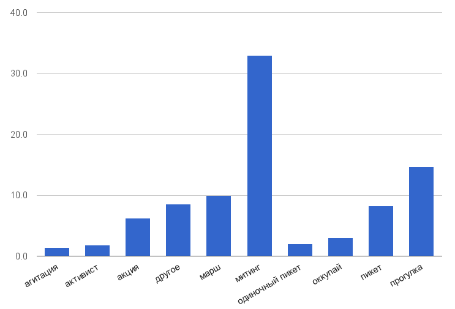
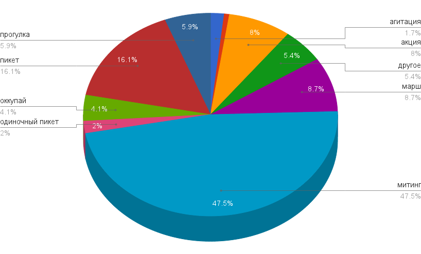

Протест на тормозах: политические задержания в 2013 году
Годовой доклад ОВД-Инфо за 2013 год
#
Резюме
ОВД-Инфо — независимый правозащитный медиа-проект, с декабря 2011 года занимающийся мониторингом политических задержаний. В этом докладе представлены собранные ОВД-Инфо в 2013 году статистические данные о количестве задержаний на мирных публичных мероприятиях и описаны типичные нарушения в отделах полиции и при судебном разбирательстве. Доклад помещен в контекст нового законодательства в области свободы собраний.
Географически доклад покрывает задержания в Москве, Санкт-Петербурге, Нижнем Новгороде, Воронеже и соответствующих областях. Хронологически доклад охватывает 2013 год, для сравнения используются данные за 2012 год.
В 2013 году в Москве и Московской области зафиксировано 1463 задержания участников публичных мероприятий, а также отдельных активистов в ходе 169 мероприятий. По сравнению с 2012 годом количество мероприятий с задержаниями сократилось на 20%, а годовое число задержаний — на 62%. Среднее число задержаний, приходящихся на одно мероприятие, снизилось с 18,2 до 8,7. В Санкт-Петербурге и Ленинградской области за год был задержан 461 человек на 42 мероприятиях; в Нижнем Новгороде и Воронеже (и соответствующих областях) произошло, соответственно, 81 и 33 задержания на 19 и 5 мероприятиях.
В Москве больше всего задержаний (38,1%) происходит на мероприятиях в поддержку политических заключенных, этой теме посвящены 23,7% зафиксированных мероприятий. Общепротестная тематика, превалировавшая в 2012 году по числу задержаний, в 2013 году сходит на нет, как и тематика «За честные выборы». Как и в 2012 году, среди мероприятий с задержаниями превалируют организованные неформальными группами активистов или стихийные мероприятия. В подавляющем большинстве случаев задержания происходят на мероприятиях, которые не были согласованы с властями. В Москве задержания чаще всего происходят на акциях и пикетах, а самым рискованным форматом становятся митинги — на них происходит большая часть задержаний.
Самыми распространенными административными статьями, применяемыми к задержанным на публичных мероприятиях в Москве, остаются 20.2, 19.3 и 20.1 КоАП. В единичных случаях протоколы составляли по другим статьям: о порче зеленых насаждений, переходе дороги в неположенном месте, несанкционированном размещении информационных материалов, блокировании транспортных коммуникаций. Впервые была применена новая статья о «пропаганде нетрадиционных сексуальных отношений среди несовершеннолетних» (6.21 КоАП).
Несмотря на изменение в 2013 году подсудности по статье 20.2 КоАП с мировых судов на районные, а также значительное увеличение штрафов (с 500-1000 рублей до 10,000-30,000 рублей), ни методы работы судов, ни распределение решений и наказаний по этим делам существенно не изменилось. По данным Судебного департамента Верховного суда, в 2013 году районные суды на всей территории России рассмотрели 2532 дела по 20.2 КоАП. В 16% случаев были вынесены оправдательные приговоры, в 54% — обвинительные. 1377 человек были оштрафованы, средний размер штрафа составил 9,386 рублей.
В 2013 году значительно участились случаи уголовного преследования задержанных участников уличных мероприятий. Число мероприятий, состоявшихся в Москве в 2013 году, после которых были возбуждены уголовные дела, возрастает по меньшей мере до восьми.
В целом по данным за 2013 год можно говорить об определенной региональной специфике:
Москва с большим отрывом лидирует по числу задержаний среди регионов РФ, причем чем меньше численность населения города, тем меньше и доля задержаний.
В отличие от Москвы, в других регионах в отношении задержанных чаще применяются административные аресты. Кроме того, в регионах полиция активно использует превентивные задержания, блокируя активистов дома или задерживая до начала публичного мероприятия, чтобы помешать его проведению.
В отличие от более крупных городов, для Нижнего Новгорода и Воронежа характерно большее давление на отдельных активистов вне публичных мероприятий.
Спектр протестных тематик в Москве оказывается значительно шире, чем в других регионах, — 10 по сравнению с 7 в Санкт-Петербурге, 6 в Нижнем Новгороде и 2 в Воронеже.
В 2013 году сохраняется весь спектр нарушений, совершаемых сотрудниками полиции по отношению к участникам публичных мероприятий, — при задержании, в автозаке и в ОВД:
сотрудники полиции не представляются и не называют причину задержания;
сотрудники полиции практикуют необоснованное и безнаказанное применение насилия при задержании и в отделах полиции;
сотрудники полиции задерживают журналистов, находящихся на политических мероприятиях по заданию редакции, а также случайных прохожих;
множество нарушений допускается в отношении задержанных в ОВД: в частности, к задержанным не допускают общественных защитников, их принуждают к дактилоскопии, оставляют в отделе полиции дольше установленных законом сроков.
В приложении к докладу содержатся общие данные о задержаниях в первом квартале 2014 года, а также о мероприятиях, посвященных сквозным темам: Олимпийским играм в Сочи, ситуации на Украине, поддержке фигурантов «Болотного дела» и Алексея Навального:
В январе — марте 2014 года в Москве зафиксировано 1598 задержаний в ходе 45 мероприятий. Таким образом, за первые три месяца было задержано больше человек, чем за весь предыдущий год. В Санкт-Петербурге были задержаны как минимум 192 человека в связи с 21 мероприятием. Количество задержаний в других рассматриваемых регионах, напротив, оказывается минимальным.
В связи с проведением Олимпийских игр в Сочи были задержаны не менее 155 человек в ходе 42 мероприятий, прошедших в 26 городах России.
В конце 2013 года начинается череда задержаний на мероприятиях, посвященных событиям на Украине. В общей сложности с декабря 2013 года по март 2014 года в Москве было зафиксировано 458 задержаний на 17 таких мероприятиях, а в Санкт-Петербурге, соответственно, 40 на 4.
В течение почти двух лет «болотный процесс» сопровождали регулярные задержания на мероприятиях в поддержку «узников Болотной». С конца мая 2012 года по март 2014 года в Москве были задержаны по меньшей мере 1450 человек в ходе 65 таких мероприятий.
С апреля 2013 года по март 2014 года в столице зафиксировано 249 задержаний в ходе 11 мероприятий, посвященных уголовному преследованию Алексея Навального, либо его избирательной кампании перед выборами мэра Москвы.
#
Предисловие
«Протест на тормозах: политические задержания в 2013 году» — второй годовой доклад ОВД-Инфо. В декабре 2011 года мы, группа журналистов, программистов и активистов, начали в ежедневном режиме отслеживать и публиковать данные о политических задержаниях в Москве. По следам этого мониторинга мы опубликовали доклад «Человек из автозака — политические задержания в Москве в 2012 году», в котором представили данные, собранные за первый год работы, и описали сам феномен «политического задержания». По сути, в предыдущем докладе мы занимались деконструкцией одного отдельно взятого института государственного подавления свободы.
В этом докладе мы представляем наши новые данные, собранные в 2013 году, и помещаем их в более широкий контекст. Мы сравниваем данные по задержаниям в Москве с ситуацией в ряде других российских городов; наличие данных за предыдущий год позволяет нам рассмотреть феномен политических задержаний в хронологическом развитии; рассмотрение нового законодательства в сфере регулирования публичных мероприятий демонстрирует весь спектр мер по органичению свободы собраний; данные судебной статистики дают альтернативную картину масштаба политических задержаний в России, в целом соответствующую статистике ОВД-Инфо.
Данные, представленные в региональном, хронологическом и законодательном контекстах, позволяют увидеть уже ранее деконструированный нами институт — «политическое задержание» — как неотъемлемую часть общей российской репрессивной практики.
Зачем мы это делаем? Находясь на границе подходов и дисциплин, мы сами определяем жанр этого доклада как «активистское исследование», activist research. Все данные, которыми мы обладаем, изначально собираются с практической целью — написать новость, рассказать историю, помочь конкретному человеку. И только потом эти человеческие истории, собранные воедино, обретают статистический характер, а соответственно — и аналитическую емкость.
И как в своей ежедневной практике мы исходим из того, что само наличие информации о задержании конкретного человека увеличивает его шансы выйти на свободу, так и в своей аналитической деятельности мы верим в освободительную функцию информации. Мы верим, что само наличие данных способно привести к изменениям — в нашем случае, к соблюдению гарантированной российской Конституцией свободы собраний и исчезновению в России политических репрессий.
Подход ОВД-Инфо — а соответственно, и задача этого доклада — заключается в сборе и представлении данных, обладающих освободительным потенциалом. Анализ и выработка конкретных решений — уже задача наших читателей из числа журналистов, ученых, активистов и политиков будущего. И именно так этот доклад и следует читать: мы бы хотели, чтобы он порождал вопросы, а не давал ответы.
#
Методология и источники данных
Количественные данные о политически мотивированных задержаниях в Москве с 1 января по 31 декабря 2013 года основываются прежде всего на информации, получаемой ОВД-Инфо непосредственно от задержанных, их адвокатов или очевидцев задержаний.
При этом учитываются только те задержания, которые расцениваются как неправомерные и политические в соответствии с критериями, разработанными ОВД-Инфо в 2012 году.
Под неправомерностью подразумевается нарушение сотрудниками полиции при задержании или оформлении задержанных действующего российского законодательства. Политический мотив задержаний определяется обстоятельствами задержания: речь может идти о задержании человека, находившегося на политическом мероприятии. Политика в данном докладе расматривается в широком смысле отстаивания своих прав и интересов. Именно сочетание неправомерности и политического контекста задержания является основанием присвоения оценочного статуса «политически мотивированное задержание».
В отличие от годового доклада за 2012 год, в отчетном периоде учтены политически мотивированные задержания не только в Москве и Подмосковье, но также в некоторых других регионах: Санкт-Петербурге, Нижнем Новгороде, Воронеже и соответствующих областях. Выбор этих территорий был обусловлен, прежде всего, наличием информации о задержаниях, а также характерным для них (по предварительной оценке) сравнительно высоким уровнем уличной активности. Источником информации о политически мотивированных задержаниях в этих регионах были сообщения местных активистских и правозащитных групп в сопоставлении с публикациями в СМИ (ссылки на источники указаны в таблице с исходными данными). Основным источником по Санкт-Петербургу стала группа «Помощь задержанным в Питере», по Нижнему Новгороду — группа «База для люстрации», а в Воронеже — движение «В защиту Хопра». Поскольку критерии политически мотивированных задержаний у региональных групп могут отличаться от принятых в ОВД-Инфо, а установление обстоятельств задержания при анализе этих данных затруднительно, отдельные задержания могли оказаться вне поля зрения ОВД-Инфо и, с другой стороны, в некоторых случаях могли быть учтены задержания, в действительности являвшиеся правомерными.
Хотя остается вероятность, что некоторые задержания не были учтены, в целом, данные по задержаниям имеют практически исчерпывающий характер (о проблемах мониторинга задержаний во время мероприятий националистической тематики см. соответствующий раздел доклада).
Качественные данные о нарушениях в ходе задержаний, уголовном преследовании задержанных и ситуации со свободой собраний имеют иллюстративный, а не исчерпывающий характер и также преимущественно базируются на публикациях ОВД-Инфо, свидетельствах самих активистов и публикациях в СМИ.
Анализ результатов судебных разбирательств имеет прежде всего количественный характер и основывается на данных Судебного департамента Верховного суда, но дополнен качественными данными из публикаций ОВД-Инфо.
Исходные данные как по Москве, так и по другим городам представлены в соответствующей таблице с указанием источника. Там же указываются описанные в докладе характеристики мероприятий: тематика, формат, организаторы, согласованность каждого мероприятия. При этом атрибутирование мероприятий выполнялось авторами для целей данного доклада и имеет оценочный характер, и при необходимости может быть пересмотрено в зависимости от целей конкретного исследования.
Определение терминов и понятий и расшифровка законов дается при первом вхождении, полный их список можно посмотреть в Глоссарии.
Как сам доклад, так и все исходные данные распространяются по открытой лицензии Creative Commons и могут использоваться другими исследователями и журналистами в соответствии с правилами лицензии.
#
Москва
#
Общая статистика задержаний
В 2013 году в Москве и Московской области ОВД-Инфо было зафиксировано 1463 задержания в ходе 169 мероприятий.
Как число мероприятий с задержаниями, так и общее количество задержаний в Москве в 2013 году существенно снизилось по сравнению с предыдущим годом. При сокращении количества мероприятий с задержаниями на 20% (с 212 в 2012 году) годовое число задержаний упало на 62% (с 3857). В результате среднее число задержаний на одном мероприятии снизилось за год с 18,2 до 8,7.
Количество задержаний в 2013 году снизилось именно на число задержаний на массовых мероприятиях в марте и мае 2012 года.
Распределение задержаний по месяцам (Москва, 2012 - 2013 год)
Большая часть задержаний в Москве приходится на теплое время года: 52% от общего числа задержаний зафиксированы в течение четырех месяцев с мая по август. В 2012 году на тот же период пришлось 63,7% задержаний.
Распределение задержаний по месяцам (Москва)
ОВД-Инфо рассматривает только мероприятия, проходящие с задержаниями, и неизвестно, какова их доля от общего количества публичных мероприятий. Не обладая этими данными, как и информацией о численности участников мероприятий, можно с уверенностью говорить только о сокращении годового числа политически мотивированных задержаний. Поскольку нет оснований утверждать, что практика полиции на публичных мероприятиях за год претерпела изменения (сотрудники полиции не начали действовать мягче и реже прибегать к задержаниям), разумно предположить, что это связано с сокращением числа участников мероприятий как таковым.
По официальным данным московского управления МВД, в 2013 году в городе прошло 11340 «публичных акций и других общественно политических мероприятий» (о количестве задержанных при этом не сообщается). В таком случае доля мероприятий с задержаниями составила бы около полутора процентов от общего числа. Однако в ведомстве не пояснили, какие именно мероприятия учитывались и каким образом, — в частности, неясно, входят ли в это число несогласованные мероприятия, одиночные пикеты, мероприятия в гайд-парках. Соответственно, пока сравнение данных полиции и ОВД-Инфо не может дать каких-либо релевантных результатов.
Данные ГУВД Москвы свидетельствуют о сокращении числа участников массовых мероприятий: в 2013 году на 28427 мероприятиях (включая также «культурно-просветительные, театрально-зрелищные, религиозные и спортивные») присутствовали 22,5 миллиона человек — при 33 миллионах участников и 34 тысячах мероприятий в 2012 году. Таким образом, по официальной информации, среднее число участников сокращается с 970 до 791, то есть на 18,5%. При этом следует помнить, что речь идет обо всех массовых мероприятиях, а не только о протестных выступлениях, а также что официальная методика подсчета количества участников и мероприятий не разъясняется и степень ее достоверности оценить невозможно.
Статистика, собранная по трем другим регионам, показывает, что столица с большим отрывом лидирует по числу задержаний на публичных мероприятиях. Так, в Санкт-Петербурге и Ленинградской области за год был задержан 461 человек на 42 мероприятиях; в Нижнем Новгороде и Воронеже (и соответствующих областях) произошло, соответственно, 81 и 33 задержания на 19 и 5 мероприятиях.
Количество задержаний по регионам (2013 год)
При этом количество задержаний в городе коррелирует с численностью его населения: чем она больше, тем больше и доля задержанных на публичных мероприятиях.
% от численности населения (по данным на начало 2014 года)
Источники данных о численности населения: Москва, Санкт-Петербург, Нижний Новгород, Воронеж.
Источники данных о численности населения: Москва, Санкт-Петербург, Нижний Новгород, Воронеж.
При том, что количество задержаний в Москве существенно выше, чем в других городах, в среднем на одном мероприятии, сопровождающемся задержаниями, в столице происходило меньше задержаний, чем в Санкт-Петербурге. Санкт-Петербург лидирует по этому параметру с показателем 11 задержаний на одно мероприятие, второе место занимает Москва, причем московский показатель — 8,7 — оказывается равен и среднему числу задержаний по всем четырем рассматриваемым регионам. На третьем месте оказывается Воронеж (6,6), затем следует Нижний Новогород (4,3). Такой разброс по среднему показателю может свидетельствовать как о более жестких действиях полиции, задерживающих в Санкт-Петербурге и Москве на отдельной акции больше человек, чем в других городах, так и, напротив, о большем уровне превентивного противодействия протестной активности в Нижнем Новгороде и Воронеже.
Среднее число задержанных на одной акции с задержаниями
#
Формат
Распределение московских мероприятий с задержаниями по форматам в 2013 году существенно меняется по сравнению с 2012 годом. Во-первых, в целом сокращается их разнообразие: исчезают задержания на мероприятиях типа «эколагерь» и «прогулка/оккупай», практически отсутствуют задержания на «оккупаях» (в 2012 году на них пришлось около трети от годового числа задержаний) и маршах.
Распределение мероприятий с задержаниями по форматам (2012-2013 год)
На мероприятиях всех форматов, за исключением прогулок и задержаний активистов вне публичных мероприятий, сокращается число задержаний.
Распределение задержаний по мероприятиям разного формата (Москва, 2012-2013 год)
Чаще всего задержания происходят на акциях и пикетах, а самыми рискованными становятся митинги — на них происходит большая часть задержаний, и в среднем на одном мероприятии такого формата задерживают существенно больше человек, чем на остальных. Именно эти четыре типа формируют основную базу мероприятий с задержаниями: акции, пикеты и одиночные пикеты — по количеству мероприятий, сопровождавшихся задержаниями, митинги — по общему количеству задержаний.
Таким образом, сокращение общего числа задержаний происходит как за счет исчезновения самых массовых по задержаниям форматов предыдущего года, так и из-за снижения количества задержаний на мероприятиях большей части форматов.
Распределение мероприятий по формату (Москва, 2013 год)
Распределение задержаний по формату (Москва, 2013 год)
Среднее число задержаний на мероприятиях разного типа (Москва, 2012-2013)
#
Основные форматы
В 2013 году задержания чаще всего происходят на акциях и пикетах (29 и 22,5% от числа мероприятий с задержаниями за год), 11,8% мероприятий составляют одиночные пикеты, 8,9% — митинги, 7,7% — прогулки. При этом самыми опасными для участников публичных выступлений оказываются митинги — на них происходит больше всего задержаний (около трети от годового числа), 21,4 и 20,8% от общего числа задержаний зафиксированы, соответственно, на пикетах и акциях, 13,1% — на прогулках.
По сравнению с предыдущим годом увеличивается относительное количество акций, одиночных пикетов (с 6,6% до 11,8%) и прогулок (с 1,9% до 13,1%), сопровождающихся задержаниями, а число пикетов и серий одиночных пикетов с задержаниями — сокращается (с 30,2 до 22,5%).

Распределение мероприятий по формату (Москва, 2012-2013 год)
Распределение задержаний по мероприятиям разных форматов (Москва, 2012-2013 год)
Увеличение относительного числа акций, прогулок и одиночных пикетов и сохранение популярности пикетов в целом соответствуют тенденции к стихиизации и сокращению численности протеста: эти форматы требуют меньших ресурсов — они оказываются проще с организационной точки зрения (за исключением двух пикетов, все они проводятся без согласования), предполагают меньшее число участников, меньшую продолжительность и большую спонтанность и мобильность. В результате мероприятия этих типов (прежде всего, акции и пикеты) используются большим количеством организаторов, посвящены широкому спектру тематик и проходят регулярно.

Распределение мероприятий разного формата по месяцам (Москва, 2013 год)
Распределение мероприятий разных организаторов по форматам (Москва, 2013 год)
Митинги
Мероприятия этого формата не только лидируют по количеству задержаний (следующие за ними пикеты и акции набирают только 21,4 и 20,8% соответственно), для них характерно и существенно более высокое среднее число задержанных (32,9 при 8,7 по Москве).
Количество митингов, сопровождавшихся задержаниями, остается прежним: в 2013 году, как ранее в 2012-м, в Москве зафиксировано 15 митингов с задержаниями. Однако относительное количество задержаний на них существенно увеличивается: на их долю приходится 33,8% от общего числа задержаний за год (при 19,1% в 2012 году).

Среднее число задержаний на мероприятиях разного формата (Москва, 2013 год)
В 2012 году задержания были зафиксированы на митингах восьми разных организаторов, в статистике 2013 года митинги пяти организаторов из этих восьми отсутствуют: сохраняются ставшие традиционными задержания на митингах «Стратегии-31» (в 2013 году на акциях в защиту 31-й статьи Конституции происходит около четверти всех задержаний на митингах, тогда как в 2012 году — около половины), а также на стихийных митингах и митингах, организованных неинституциализированными группами активистов (категория «другое»). Появляется один новый организатор: задержаниями сопровождается митинг, организованный предвыборным штабом Алексея Навального.
Общими темами для митингов 2012 и 2013 годов остаются, помимо «Стратегии-31», политзаключенные и ЛГБТ; тематика «За честные выборы» сходит на нет, ее место занимают социальная, националистическая и предвыборная тематика.

Распределение задержаний на митингах разной тематики (Москва, 2012-2013 год)
Акции
Мероприятия формата «акции» в 2013 году чаще других заканчиваются задержаниями (29% от общего числа мероприятий с задержаниями по сравнению с 17,5% в 2012 году). На них происходит 21,1% от общего числа задержаний за год. К акциям относятся мероприятия, предполагающие некоторые действия участников с собой, друг с другом или с внешними объектами (подробнее о классификации мероприятий по форматам можно прочитать в докладе ОВД-Инфо за 2012 год).
Акции оказываются наиболее популярным форматом среди организаторов (при этом рассматриваются только те мероприятия, на которых происходили задержания): к ним прибегали в 2013 году по меньшей мере девять из выделенных ОВД-Инфо организаторов, а также неформальные группы активистов (категория «другое»). Этот формат используется для мероприятий самой разной тематики (8 из 12 выделенных в 2013 году). Задержания на мероприятиях такого типа происходят регулярно на протяжении всего года: ежемесячно с января по декабрь.
Тематика мероприятий разных форматов (Москва, 2013 год)
#
Другие форматы
В 2013 году в Москве возросло количество задержаний активистов вне публичных мероприятий (с 8 до 14).
На прежнем уровне сохраняются задержания на московских мероприятиях типа «агитация», которые стабильно составляют около 6% от общего числа мероприятий с задержаниями и около 1% от общего числа задержанных. Тем не менее их содержание существенно меняется: из 10 зафиксированных мероприятий этого типа 4 посвящены агитации за Алексея Навального как кандидата в мэры Москвы, в то же время превалировавшая в 2012 году тема для агитации — общепротестная (категория «антиПутин») — сходит на нет: в 2013 году ей посвящены только два агитационных мероприятия (в 2012 — 10 из 13). Не зафиксировано задержаний на агитационных мероприятиях против фальсификаций на выборах (2 в 2012 году).
#
Исчезающие форматы
В 2013 году ОВД-Инфо не зафиксировало мероприятий типа «эколагерь», переходного формата «прогулка/оккупай», практически отсутствовали и задержания на «оккупаях». При этом, если количество задержанных на мероприятиях первого типа было невелико и в предыдущем году (1%), то на последние приходилось в общей сложности около 33% от общего числа задержаний (при 0,2% в 2013 году). Существенно сокращается также количество задержаний на маршах (с 12,5 до 0,7% задержаний), равно как и число мероприятий такого формата, завершившихся задержаниями (с 1,9 до 0,6%). При этом новые форматы на смену исчезнувшим не приходят: хотя в отдельных случаях возникают новые термины для описания мероприятий, они вписываются в уже существующую классификацию (так происходит, например, с «народными сходами» и «кубами»).
#
Форматы мероприятий в других регионах
Задержания на митингах, акциях, пикетах и одиночных пикетах зафиксированы ОВД-Инфо в 2013 году не только в Москве, но и в других регионах: в Санкт-Петербурге, Нижнем Новгороде, Воронеже и соответствующих областях. Распределение между форматами в этих регионах существенно различается: в частности, количество акций в них значительно меньше, чем в Москве, а митингов, напротив, больше. Кроме того, в Нижнем Новгороде и Воронеже случаи задержаний активистов вне публичных мероприятий оказываются намного распространеннее, чем в более крупных городах (42,2% и 20% от годового числа мероприятий с задержаниями в Нижнем Новгороде и Воронеже при 8,3% и 7,1% в Москве и Санкт-Петербурге соответственно).
Распределение мероприятий с задержаниями по форматам в разных регионах (2013 год)
Распределение задержаний по мероприятиям разного формата в регионах (2013 год)
#
Организаторы
Большая часть рассматриваемых мероприятий была организована неформальными группами активистов или же движениями, чьи выступления заканчивались задержаниями в единичных случаях (категория «другое», 41,4%), либо имела стихийный характер (19,5%). При этом на первых произошло 27,2%, а на последних — 40,3% от общего числа задержаний. В целом, на протяжении всего года можно говорить о превалировании среди мероприятий с задержаниями тех, которые были организованы неинституционализированными группами.
Число мероприятий неинституционализированных организаторов (Москва, январь 2012 - декабрь 2013 года)
Распределение мероприятий с задержаниями по организаторам (Москва, 2013 год)
Среди остальных организаторов по числу мероприятий с задержаниями лидируют Комитет протестных действий (4,7% от общего числа мероприятий с задержаниями и 7,2% от общего числа задержанных), «Стратегия-31» (соответственно 4,1% и 8,7%) и «Другая Россия» (4,1% и 2,9%).
Распределение задержаний по мероприятиям разных организаторов (Москва, 2013 год)
Наиболее высокое среднее число задержанных характерно для мероприятий «Стратегии-31» (18,1) и стихийных выступлений (17,8). Средний уровень по этому параметру (8,7) превышают также мероприятия, организованные Комитетом протестных действий (13,1), антифашистами (11,4) и Координационным советом оппозиции (10).
Среднее число задержаний на акциях разных организаторов
В 2013 году появляются новые организаторы (например, на фоне избирательной кампании Алексея Навального, баллотировавшегося в мэры Москвы, появляются «Штаб Навального» и группа «Братьев Навального» — на их долю приходится в общей сложности 7 мероприятий с задержаниями), увеличивается количество антифашистских мероприятий с задержаниями (с 1 до 5), продолжают происходить задержания на мероприятиях Комитета протестных действий (8 по сравнению с 7 в 2012 году), в то же время сокращается количество мероприятий с задержаниями ранее активных организаторов — «Солидарности» (с 13 до 5), «Яблока» (с 3 до 0), «Левого фронта» (с 9 до 1), «Другая Россия» (с 22 до 7). При этом тематика мероприятий «Другой России» в 2013 году настолько отличается от общей повестки, что почти все они попадают в категорию «другое». Снижение активности «Солидарности» объясняется ее активным участием в Комитете протестных действий, а практическое исчезновение «Левого фронта» легко объяснимо домашним арестом Сергея Удальцова и другими репрессивными действиями власти в отношении этого движения.
Предпочтения организаторов по тематике мероприятий (Москва, 2013 год)
Как и в 2012 году, организаторы чаще всего интересуются только одной или двумя тематиками (и только в исключительных случаях — тремя), а также отдают предпочтение только некоторым из всего спектра используемых для мероприятий форматов. Гораздо разнообразнее и по тематике, и по формату оказываются стихийные мероприятия (в 2013 году зафиксированы такие мероприятий 7 разных форматов, они посвящены 8 разным темам).
Предпочтения организаторов по формату мероприятий (Москва, 2013 год)
#
Тематика мероприятий
Как и в 2012 году, больше всего мероприятий с задержаниями в Москве в 2013 году посвящены теме политзаключенных (23,7% от общего числа рассматриваемых мероприятий), на них же происходит большая часть задержаний (38,1%). При этом количество задержанных на мероприятиях в поддержку политзаключенных увеличилось по сравнению с 2012 годом на 87% (с 299 до 559).
Распределение задержаний на мероприятиях в поддержку политзаключенных по месяцам (Москва, 2012-2013 год)
Мероприятия в поддержку политзаключенных проходят ежемесячно, причем их проводят различные организаторы: Комитет протестных действий, Координационный совет оппозиции, «Левый фронт», «Солидарность», «Гринпис».
Распределение задержаний по тематике (Москва, 2013 год)
Распределение мероприятий по тематике (Москва, 2013 год)
Общепротестная тематика, следовавшая в предыдущем году в списке вслед за политзаключенными по количеству мероприятий с задержаниями и превалировавшая по количеству задержаний (46%), в 2013 году сходит на нет (количество мероприятий на условно «антипутинскую» тематику, то есть направленных в целом против текущей политической системы, составляет только 8,9% от общего числа, на них происходит 5,7% задержаний). Вместо общепротестной на второе место поднимается социальная тематика (20,7% мероприятий и 12,5% задержаний). Место тематики «За честные выборы» (11,3% мероприятий в 2012 году) занимает тематика «выборы» (6,5%), ставшая актуальной в связи с выборами мэра Москвы. С 0,9% до 7,1% увеличивается относительное количество мероприятий в защиту прав ЛГБТ, число задержаний на них составляет 11,4% (по сравнению с 1,2% в 2012 году). Увеличивается и число задержаний, зафиксированных на мероприятиях на националистическую тематику (на них происходит 8,5% задержаний).
При этом можно выделить отдельные сюжеты, которые в статистике ОВД-Инфо специально не атрибутировались: например, проходившие летом 2013 года протесты против реформы РАН или выступления голодающих многодетных матерей у офиса партии «Единая Россия» (тематика «социальная»), регулярные прогулки в поддержку обвиняемых по «Болотному делу», послужившие основой «Стратегии-6» (тематика «политзэки»), мероприятия сторонников Алексея Навального (тематики «политзэки» и «выборы») — между тем на последние приходится 15% от годового числа задержаний.
Распределение мероприятий с задержаниями по тематике (Москва, 2012-2013 год)
Распределение задержаний на мероприятиях разной тематики (Москва, 2012-2013 год)
Самое высокое среднее число задержаний, приходящихся на одно мероприятие (без учета мероприятий, не сопровождавшихся задержаниями), характерно для мероприятий на националистическую тематику (62,5 при 8,7 всего по Москве). Cредний уровень превышают также мероприятия «Стратегии-31» (18,1), мероприятия в поддержку политзаключенных (14) и в защиту прав ЛГБТ (13,9).
Среднее число задержаний на мероприятиях разной тематики (Москва, 2013 год)
По данным ОВД-Инфо можно проследить, что мероприятия в поддержку политзаключенных и на социальную тематику проходили регулярно, и на них ежемесячно происходили задержания. В то же время некоторые темы проявляются только спорадически (например, «антифа», «антиПутин» или «экология»), а другие становятся резко популярными на несколько месяцев, а затем по тем или иным причинам сходят на нет (как, например, «выборы», «ЛГБТ»).
Распределение задержаний на мероприятиях разной тематики по месяцам (Москва, 2013 год)
В целом, спектр протестных тематик в Москве оказывается значительно шире, чем в других регионах, — 10 по сравнению с 7 в Санкт-Петербурге, 6 в Нижнем Новгороде и 2 в Воронеже.

Распределение мероприятий с задержаниями по тематике в разных регионах (2013 год)
#
Согласованность
Подавляющее большинство задержаний происходило в Москве на несогласованных мероприятиях (то есть тех, которые по тем или иным причинам не были заранее согласованы организаторами с властями, в том числе одиночных пикетах и мероприятиях в «гайд-парках»): за год было зафиксировано 8 согласованных мероприятий, участников которых задерживала полиция, — это менее 5% от общего числа мероприятий с задержаниями. На них было задержано в общей сложности 46 человек, то есть около 3% от общего числа задержанных. Таким образом, согласованные мероприятия характеризуются и меньшим средним числом задержанных, приходящихся на одно мероприятие с задержаниями: 5,8 по сравнению с 8,8 на несогласованных.
Между тем в 2012 году на согласованные мероприятия приходилось 20% от общего числа задержаний.

Распределение задержаний между согласованными и несогласованными мероприятиями в разных регионах (2013 год)
В Санкт-Петербурге, где на несогласованных мероприятиях задержания происходили также существенно чаще, чем на согласованных (39 к 3), среднее число задержанных выше, наоборот, на согласованных мероприятиях (12,3 по сравнению с 10,9). В Воронеже, где на двух согласованных мероприятиях произошло 78,8% от общего числа задержаний (26 из 33), на них также зафиксировано и существенно более высокое среднее число задержаний (13 по сравнению с 2,3 на несогласованных мероприятиях). В Нижнем Новгороде же вообще не было зафиксировано ни одного задержания на согласованных мероприятиях.
Среднее число задержаний на одном мероприятии в зависимости от согласованности в разных регионах (2013 год)
Следует учитывать, что при классификации данных ОВД-Инфо относит к несогласованным как мероприятия, о которых организаторы в принципе не уведомляли местные власти, так и те, в проведении которых им по тем или иным причинам было отказано. К несогласованным причисляются и одиночные пикеты, по закону не требующие согласования, и серии одиночных пикетов, а также задержания вне публичных мероприятий. По мнению ОВД-Инфо, несогласованность мероприятия не является достаточным основанием для задержания его участников. Эта позиция, подробно описанная в докладе за 2012 год, основывается на гарантиях права граждан на свободу собраний, прописанных в российской Конституции и международных нормативных актах, с одной стороны, и распространенной практике препятствования согласованию публичных мероприятий со стороны властей — с другой.
#
Регионы
В отличие от данных о задержаниях в Москве и Московской области, основывающихся на собственных сведениях ОВД-Инфо, источником информации о задержаниях в других регионах в большинстве случаев становились сведения местных правозащитных и активистских групп, а также публикации в СМИ. Подробнее об источниках данных ОВД-Инфо можно прочитать в соответствующей главе доклада.
#
Санкт-Петербург
В Санкт-Петербурге и Ленинградской области в 2013 году было задержано не менее 461 человека на 42 мероприятиях. В среднем на одно меропритие приходится 11 задержаний — это максимальный показатель по сравнению с остальными регионами, включенными в статистику ОВД-Инфо (в среднем по четырем регионам он достигает 8,7).

Распределение задержаний по мероприятиям разных форматов (Санкт-Петербург, 2013 год)
Распределение мероприятий с задержаниями по форматам (Санкт-Петербург, 2013 год)
Наиболее частыми и многочисленными были в Санкт-Петербурге задержания на митингах: на 13 мероприятиях этого типа (что составляет 31% от общего числа мероприятий) были задержаны 219 человек (47,5% от общего числа задержанных за год). Реже задержания происходили на одиночных пикетах (16,7%), пикетах и акциях (5%), в отдельных случаях — во время агитационных мероприятий, на маршах, оккупаях и прогулках.

Распределение мероприятий с задержаниями по организаторам (Санкт-Петербург, 2013 год)
Почти половина петербургских мероприятий, на которых происходили задержания (20 из 42 или 47,6%), не были организованы какими-либо широко известными политическими или общественными движениями (категория «другое»), на них произошло 24,9% задержаний. К ним относятся, в частности, задержания на народных сходах националистической направленности, разгон «ЛГБТ-Прайда», задержания участников одиночных пикетов, в том числе посвященных ЛГБТ-тематике, разгон сквота на территории Варшавского вокзала, задержания художников, проводивших акции, задержания активистов при раздаче листовок в поддержку обвиняемых по «Болотному делу», разгон забастовки на заводе «Антолин».
Распределение задержаний по мероприятиям разных организаторов (Санкт-Петербург, 2013 год)
Больше всего задержаний отмечено на стихийных мероприятиях, не имеющих явных организаторов, — на них произошло около половины от общего числа задержаний в регионе (222 из 461 или 48,2%). Среди прочих как по числу самих мероприятий, так и по числу задержанных лидируют выступления в рамках «Стратегии-31»: задержания были зафиксированы на всех семи мероприятиях, состоявшихся в 2013 году (16,7%), в общей сложности на них было задержано 58 человек (12,6%). Самое высокое среднее число задержанных наблюдается у стихийных выступлений — 222 человека на 7 мероприятиях, то есть 31,7. Показатель выше среднего по этому параметру (11) характерен также для мероприятий анархистов и экологов (27 и 14 соответственно).
Среднее число задержаний на мероприятиях разных организаторов (Санкт-Петербург, 2013 год)
По количеству задержанных лидируют мероприятия националистической тематики: на них происходит 167 задержаний из 461 (36,2%). С большим отставанием за ними следуют мероприятия, посвященные политзаключенным: на них были задержаны 72 человека (15,6%), из которых 64 были задержаны на народном сходе в поддержку Алексея Навального, а также мероприятия «Стратегии-31» (12,6% задержанных) и мероприятия в защиту прав ЛГБТ (12,1%).
Распределение задержаний по мероприятиям на разную тематику (Санкт-Петербург, 2013 год)
Распределение мероприятий с задержаниями по тематике (Санкт-Петербург, 2013 год)
На мероприятиях, не подпадающих ни под одну из постоянных тематических категорий (категория «другое»), происходит 12,4% от общего числа задержаний, при этом к ним относится около трети от общего числа всех зафиксированных в Петебурге мероприятий с задержаниями. Среди них — задержания после или во время одиночных пикетов (например, одиночного пикета, направленного против Японии); акции художников (например, акция Петра Павленского «Туша», в рамках которой он разделся догола, обмотался колючей проволокой и лег на асфальт); раздача листовок против саммита Большой двадцатки; акция против закрытия Музея власти; забастовка на заводе «Антолин». Кроме того, чаще других задержания происходили на мероприятиях националистов (19% от годового числа мероприятий), «Стратегии-31» (16,7%) и мероприятиях в поддержку политических заключенных (11,9%).
Среднее число задержаний на мероприятиях на разную тематику (Санкт-Петербург, 2013 год)
Высокое среднее число задержаний характерно для выступлений на националистическую тематику (20,9), а также в поддержку ЛГБТ (18,7).
В большинстве случаев задержания происходили во время мероприятий, которые не были согласованы с местными властями (включая не требующие согласования одиночные пикеты и акции в «гайд-парках»): на них приходится 39 из 42 мероприятий (92,9%) и 424 человека из 461 задержания (92%). Среднее число задержаний на несогласованных мероприятиях оказывается чуть меньше, чем на согласованных (10,9 по сравнению с 12,3).
За год в регионе было зафиксировано три случая задержаний на согласованных мероприятиях. 7 октября два человека были задержаны на пикете памяти Анны Политковской: как передает «Росбалт», «после завершения официальной части акции <...> были задержаны представитель группы «Война» Игорь Чепкасов и активист Данила Александров. Это произошло после того, как они развернули плакат с обвинением Путина в притеснении прессы». 20 октября восемь человек были задержаны на народном сходе против этнопреступности: по данным «Росбалта», «причиной задержаний явился тот факт, что молодые люди начали скандировать лозунги до того момента, как будет дан официальный старт мероприятия». 27 человек были задержаны на организованном анархистами «Первомае», при этом ОВД-Инфо не может с полной уверенностью утверждать, что все задержания были неправомерными. На сайте движения «Автономное действие» сообщается:
«К сожалению, не обошлось и без попытки провокации со стороны правых. Небольшая группка ж***головых (которые вообще не понятно какое отношение имеют к празднику солидарности трудящихся), при виде анархистов, начали вскидывать руки в характерном жесте. После очень короткой стычки, правые позорно ретировались. Крайне нелогично в данной ситуации повел себя ОМОН: вместо того, чтобы задерживать зигующих ж***головых, они взяли в кольцо небольшую группу анархистов (около 30 человек), и затем погрузили товарищей в полицейский автобус».
Самые массовые задержания были зафиксированы в Санкт-Петербурге во время народного схода в поддержку Алексея Навального в день обвинительного приговора по делу Кировлеса: 18 июля на Малой Садовой улице было задержано 64 человека.
Вот как описывает задержания того дня «Росбалт»:
«Время от времени в автозаки сажают новых оппозиционеров. В первую очередь тех, кто достает плакаты <...>. Однако оппозиционеры не расходятся по домам. Люди кричат: «Мы не уйдем». Стражи порядка требуют, чтобы активисты не мешали проходу пешеходов. Однако оппозиционеры в ответ кричат: «Мы пешеходы!» и размахивают газетами «За Навального». Недавно были задержаны еще трое. Среди них, вероятно, был активист Даниил Грачев. По оценке корреспондента «Росбалта», в акции принимают участие около 2 тыс. человек. Петербургский омбудсмен Александр Шишлов сообщил, что полиция ведет себя корректно».
Немногим менее — 60 человек — было задержано 21 сентября 2013 года на народном сходе против мигрантов возле станции метро «Ломоносовская». «Росбалт» цитирует петербургского националиста Николая Бондарика:
«Задерживали всех, кроме бабушек, и без объяснения винтили в автобусы. Отбирали у маршруточников машины и сажали туда даже… Задержали нескольких подростков и восьмилетнего мальчика — ребята были возле метро, несли какие-то подарки… Не вызвали родителей, ничего — просто задержали. Сейчас мы развозим продукты, Владимир Волохонский — пенки. Активисты пытаются выяснить, кто в каком отделении. Но в отделениях полиции сообщать об этом отказываются».
Многочисленными задержаниями были отмечены также Марш против толерантности 4 ноября у БКЗ «Октябрьский» (40 задержанных) и «ЛГБТ-Прайд» 29 июня 2013 года на территории «гайд-парка» на Марсовом поле (54 задержанных). Задержания на «ЛГБТ-Прайде» продемонстрировали, как закон о пропаганде «нетрадиционных сексуальных отношений» становится препятствием для свободы собраний — как передает «ЗакС.Ру», «спустя несколько минут после начала акции сотрудник Комитета по вопросам законности правительства Санкт-Петербурга Николай Струментов заявил [председателю оргкомитета «ЛГБТ-прайда»] Юрию Гаврикову о том, что на основании неких жалоб граждан, усмотревших в плакатах участников «пропаганду гомосексуализма», полиции передано решение о прекращении акции». После этого полиция потребовала прекратить мероприятие и почти сразу начала задерживать людей.
#
Нижний Новгород
В Нижнем Новгороде и Нижегородской области в 2013 году отмечено 81 задержание в ходе 19 мероприятий. При задержаниях на публичных мероприятиях в Нижнем Новгороде в среднем задерживают существенно меньше человек, чем в других регионах (среднее число составляет 4,3, в то время как в других регионах оно колеблется от 6,6 до 11).
Распределение задержаний по мероприятиям разного формата (Нижний Новгород, 2013 год)
Распределение мероприятий с задержаниями по форматам (Нижний Новгород, 2013 год)
Наиболее часты здесь были задержания отдельных активистов вне массовых мероприятий: число таких случаев составляет почти половину (8 из 19) от общего числа мероприятий с задержаниями, всего задержано 16 человек. Среди уличных мероприятий по числу задержаний лидируют пикеты (17 задержанных, то есть 21% от общего числа задержаний за год), 14 человек (17,3% ) задержаны на трех митингах, еще столько же — на одном шествии в честь Дня русской нации, организованном «Другой Россией» и ЭПО «Русские» 5 апреля в Нижнем Новгороде. В тот же день позднее было задержано еще трое человек, имевших отношение к этому мероприятию, за растяжку «Отобрать и поделить» на строительных лесах.
Среднее число задержанных на мероприятиях разного формата (Нижний Новгород, 2013 год)
Сравнительно высокое среднее число задержаний характерно для шествия и пикетов (14 и 8,5 при среднем 4,7). Наиболее высокое число задержаний на одном мероприятии отмечено на серии одиночных пикетов 16 февраля в Дзержинске в поддержку школы №15, в которой приняли участие представители ведущих оппозиционных движений — «Другой России», «Левого фронта», Партии 5 декабря: сотрудники полиции задержали 15 участников под предлогом того, что они распространяли экстремистские материалы — в листовке, критикующей развал образования в России, содержалась цитата из Гитлера о том, что для покорения народа следует лишить его школ. Упоминавшееся выше шествие с 14 задержанными оказывается на втором месте.
Распределение задержаний по мероприятиям разной тематики (Нижний Новгород, 2013 год)
Распределение мероприятий с задержаниями по тематике (Нижний Новгород, 2013 год)
Больше всего задержаний произошло на мероприятиях националистической тематики: за год на трех таких мероприятиях задержаны 29 человек (36,7% от общего числа задержанных), для них характерно и значительно более высокое среднее число задержаний — 9,7 при общем среднем числе 4,7. 18 человек (22,8%) задержаны на трех мероприятиях на социальную тематику, 13 (16,5%) — в ходе двух акций «Стратегии-31». Кроме того, два человека были задержаны за расклейку листовок о согласованном мероприятии в Автозаводском парке на экологическую тематику, 9 мая активист «Трудового Нижнего Новгорода» был задержан за одиночный пикет в честь «Победы советского народа над фашизмом».
Среднее число задержаний на мероприятиях разной тематики (Нижний Новгород, 2013 год)
Самым активным организатором выступает в регионе «Другая Россия» — активисты партии участвовали в организации большей части рассматриваемых мероприятий, в том числе двух — совместно с ЭПО «Русские» (упомянутые выше шествия и акции с растяжкой), одного (также упоминавшегося пикета в поддержку школы) — вместе с «Левым фронтом» и Партией 5 декабря. В общей сложности на этих мероприятиях задержано 45 человек. На втором месте с большим отрывом следуют мероприятия в рамках «Стратегии-31», к которым тоже приложила руку «Другая Россия», — 13 человек на двух мероприятиях.
Ни одно из зафиксированных ОВД-Инфо мероприятий в Нижнем Новгороде и области, на которых происходили задержания, не носило статуса «согласованного».
#
Воронеж
В Воронеже и Воронежской области в 2013 году было задержано не менее 33 человек на 5 мероприятиях. Среднее число задержанных составляет 6,6. При этом регулярных политически мотивированных задержаний в течение года в регионе выявлено не было: все зафиксированные в 2013 году задержания пришлись на второй квартал и касались экоактивистов движения «В защиту Хопра».
Единственным мероприятием с многочисленными задержаниями стал митинг «В защиту Хопра» 22 июня в Новохоперском районе, участники которого выступали против добычи никеля в регионе, — после митинга было задержано 25 человек. ОВД-Инфо затрудняется оценивать все эти задержания как неправомерные, поскольку участники акции сломали забор и подожгли геолого-разведочное оборудование на территории месторождения никеля. Как сообщает сайт «Save Khoper!», «задержанные были доставлены в РОВД по Новохоперскому района, где их удерживали более 10 часов, без объяснения оснований для задержания и предъявления обвинений. У задержанных были отобраны телефоны, их заставляли давать объяснения и пытались брать отпечатки пальцев. Все описанное происходило без присутствия адвокатов. В течение 10 часов людей не кормили и не предоставили право телефонного разговора. Среди задержанных было много жителей других областей, в частности, Волгоградской (Урюпинск), Астраханской. Их автомобили останавливали по пути следования, и без объяснения оснований для задержания доставляли в полицию. При задержании жителей Урюпинска, ехавших на автомобиле Нива, сотрудники полиции выбили стекла у машины и с применением силы вытащили людей наружу. Всю ночь местные жители дежурили у полицейского участка, пытаясь безрезультатно наладить связь с задержанными. 23 июня утром активистов освободили, вручив им уведомление о явке на допрос 26 июня с целью дачи свидетельских показаний».
Оба митинга, на которых происходили задержания, были согласованы: таким образом, на согласованных мероприятиях в Воронеже были задержаны 26 человек (при 7 на несогласованных).
Все задержания, зафиксированные в Воронеже, были связаны с экологической тематикой. Экологии были непосредственно посвящены два мероприятия — упоминавшийся выше митинг «В защиту Хопра» и одноименный пикет в Воронеже 23 мая. Еще одно задержание произошло на первомайской демонстрации: участницу мероприятия задержали за то, что она кричала «Нет никелю на Хопре!». Кроме того, отмечено два задержания активистов вне публичных акций, также связанных с экологическими мероприятиями. 17 апреля, как передает интернет-издание «Article20», «активная участница Движения в защиту Хопра, ранним утром была принудительно доставлена из Новохоперска в Воронеж для проведения следственных действий. Она является свидетелем по уголовному делу о причинениилегкого вреда здоровью руководителю и зам. руководителя (братья Копейкины) ООО «Воронежгеология», которая является подрядчиками УГМК. «Воронежгеология» занимается разведочными работами в области разработки медно-никелевых месторождений». 23 июня, на следующий день после митинга в Новохоперском районе, происходили задержания активистов в связи с расследованием поджога буровых: как передает сайт «Save Khoper!», «были задержаны <...> 3 человека из Новой Усмани (Воронежская область) <...> отпущены под подписку о том, что они не поджигали буровые».
#
Нарушения при задержаниях на публичных мероприятиях
В 2013 году сохраняется весь спектр нарушений, традиционно совершаемых сотрудниками полиции по отношению к участникам публичных мероприятий — при задержании, в автозаке и в ОВД.
#
Задержания участников уличных мероприятий
Без необходимости и часто с применением силы пресекаются мирные уличные мероприятия, иногда даже в тех случаях, когда они не имеют политической окраски. При этом согласно рекомендациям ОБСЕ, «аресты нельзя производить исключительно с целью прекращения участия определенного лица в собрании или с целью недопущения такого участия».
Так очевидец описывает задержания в центре Москвы во время флешмоба 17 ноября (здесь и далее сохранены орфография и пунктуация оригинала):
ОВД-Инфо ни разу не зафиксировало соблюдение полицейскими формальной процедуры задержания: закон требует, чтобы они имели нагрудный знак с персональным номером, представлялись, объясняли причину задержания, а протокол об административном нарушении при возможности составлялся на месте событий, без доставления в ОВД.
Задерживают не конкретных людей, создающих угрозу совершения насильственных действий, а произвольных участников (между тем, по нормам ОБСЕ, «во время задержания участников или принудительного прекращения собрания (что является крайней мерой) сотрудникам правоохранительных органов не следует относиться к тому или иному скоплению людей как к однородной массе»).
Вспоминают задержанные во время протестной прогулки по Красной площади:
Свое участие в мероприятии описывает задержанный на пикете в поддержку политзаключенных:
Рассказывает свидетель задержаний у Замоскворецкого суда 8 октября, в день вынесения приговора Михаилу Косенко:
Как сообщали ОВД-Инфо очевидцы, на той же акции «в толпе растянули баннер, полицейские подходят к тем местам, где был растянут баннер, и задерживают случайных людей из толпы».
#
Задержания случайных прохожих и журналистов
Нередко среди задержанных оказываются случайные прохожие и журналисты. Так, многочисленные задержания журналистов были зафиксированы во время многотысячного стихийного народного схода 18 июля в центре Москвы. И это не исключительный случай: практика задержания представителей СМИ, присутствующих на публичных мероприятиях по заданию редакции, широко распространена, в некоторых случаях сотрудники полиции нападают на журналистов, избивают их, ломают аппаратуру или удаляют снятые фото- и видеоматериалы.
6 мая оператора «Lenta.doc» задерживают за съемку баннера:
14 декабря задержан фотограф, снимавший одиночный пикет:
За съемку пикета 4 октября задержан корреспондент издания «Грани.ру»:
19 июля, на следующий день после массовых задержаний в центре у здания Госдумы, задержаны несколько человек, проходивших по Манежной площади, включая двух журналистов:
Фотограф рассказывает, как перед несостоявшейся акцией в День народного единства 4 ноября у концертного зала «Октябрьский» в Санкт-Петербурге наряду с националистами были задержаны два случайных прохожих, назначившие в этом месте встречу:
#
Избиения участников публичных мероприятий
При задержании сотрудники полиции часто действуют грубо и применяют силу (вплоть до избиения) — даже если задерживаемый не сопротивляется.
Участники прогулки на Красной площади в поддержку политических заключенных описывают задержание пожилого мужчины:
На применение полицией силы жалуются и задержанные 14 августа градозащитники:
Сообщение о задержании во время акции против закона о прописке 9 мая на Тверской улице:
По словам свидетелей задержания Веры Шиховой 19 декабря во время одиночного пикета у здания администрации президента, «полицейские ударили [ее] в грудь и в лицо, после чего затолкали в машину, отчего у Шиховой, имеющей грыжу на шее, отнялись ноги».
Задержание у агитационного куба в поддержку Алексея Навального 21 сентября:
Избиение задержанных продолжается в автозаках и ОВД. Так, Елену Костюченко, задержанную 25 января на акции против принятия законопроекта о запрете «пропаганды гомосексуализма», «сначала собирались оформить по статье 19.3 (неповиновение законному распоряжению сотрудника полиции), обещая пять суток административного ареста, однако в итоге выгнали из отдела вообще без протокола. При этом ей порвали сумку. До этого активистку столкнули с лестницы, разорвав куртку и поставив синяк на скулу, после чего посадили в обезьянник».
По сообщению задержанных 31 июля на акции «Стратегия-31» в Москве, «пока их доставляли в ОВД Красноселькое, полицейские в автобусе избили ногами задержанного Александра Макарова. Александр Макаров госпитализирован в 29 городскую больницу с подозрением на перелом руки».
8 марта полиция избивает в автозаке задержанных в Новопушкинском сквере:
Сообщение о задержаниях 16 февраля при поздравлении находящегося под домашним арестом Сергея Удальцова с днем рождения:
Многие такие случаи зафиксированы во время массовых задержаний на народном сходе 18 июля:
Избиения участников публичных акций обычно не имеют никаких последствий для сотрудников полиции (дела против них не возбуждаются, а рассмотрение заявлений пострадавших затягивается). Более того, жалобы на избиения грозят задержанным возбуждением уголовного дела о применении насилия в отношении представителя власти (статья 318 УК).
#
Автозак как пытка
Время с момента задержания и до доставления в ОВД, когда задержанный находится в полицейском автобусе или автозаке без каких-либо внешних свидетелей, является наиболее опасным этапом задержания.
Избиения — только один из видов издевательства над задержанными в автозаке. Так, сотрудники полиции могут намеренно создавать в автомобиле суровые условия:
Задержанные на акции 18 марта жалуются на холод в автозаке:
8 мая — на духоту:
#
Недопуск защитников
В таких условиях особенно значимым становится недопуск к задержанным защитников в нарушение российского законодательства, предоставляющего задержанному право на юридическую защиту.
18 декабря защитника не пускают в ОВД «Тверской» к задержанным на пикете у Госдумы с требованием широкой амнистии:
17 ноября защитника не пускают в ОВД «Китай-Город» к задержанным во время прогулки на Красной площади в поддержку политзаключенных:
Аналогичый инцидент происходит в этом отделе полиции 27 апреля:
#
Принуждение к дактилоскопии
Сохраняется практика принуждения задержанных к снятию отпечатков пальцев — между тем российское законодательство позволяет проводить дактилоскопию, только если иным способом установить личность задержанного невозможно или же при наложении административного ареста по решению суда.
ОВД «Арбат», 27 июня:
Задержанных, отказывающихся от процедуры, обычно дольше не выпускают на свободу. Такие случаи зафиксированы в разных отделах полиции и после различных мероприятий (в том числе 11 мая, 18 июля, 6 декабря):
#
Превышение допустимого срока задержания
Российский Кодекс об административных правонарушениях предусматривает содержание задержанного в полиции не более трех часов, если вменяемая ему статья не предполагает ареста (как часто применяемая к задержанным на публичных мероприятия статья 20.2 КоАП), а при «арестной» статье (как 20.1 и 19.3 КоАП) — до 48 часов.
На практике трехчасовой срок, отведенный на предъявление обвинения и составление протокола, регулярно превышается.
Так, 8 марта задержанного держат в ОВД «Якиманка» свыше четырех часов; задержанных 31 декабря участников «Стратегии-31» держат в ОВД «Пресненский» более пяти часов; около пяти часов держат 17 декабря в ОВД «Тверской» задержанных на народном сходе «За широкую амнистию»; ЛГБТ-активистов, задержанных 24 июля на пикете у детской библиотеки, оставляют в ОВД «Якиманка» на семь часов.
Рассказывает задержанный во время протестной прогулки по Красной площади:
Случается, что задержанных, которым вменяется арестная статья, держат в отделе полиции больше 48 часов без суда. Так происходит, например, с тремя градозащитниками, задержанными 27 ноября: после составления протокола по статье 19.3 КоАП их оставляют в ОВД «Пресненский» до суда, который состоится через три дня. На вторые сутки их без решения суда доставляют в спецприемник для административно арестованных.
#
Условия содержания
Постоянно нарушается требование закона обеспечивать питанием задержанных более чем на три часа. Более того, сотрудники полиции часто отказываются передавать задержанным еду и воду, которые привозят в ОВД их родственники и друзья.
Задержанные 9 мая участники акции на Тверской улице жалуются, что в ОВД «Тверской» им не только не дают воды и не разрешают передавать ее в ОВД, но также не позволяют им выходить в туалет.
Задержанные 7 ноября на акции, приуроченной к 96-й годовщине Октябрьской революции, оставлены на ночь без еды и воды. Кроме того, у них отбирают паспорта и телефоны, что также является распространенной практикой — паспорта часто забирают как в самом ОВД, так и сразу при задержании:
#
Принудительная психиатрическая госпитализация
Сохраняется настораживающая практика принудительной психиатрической госпитализации задержанных (как правило, если задержанный активно выражает недовольство действиями полиции, настойчиво требует соблюдения своих прав или отказывается называться). Впрочем, случаи вызова перевозки психиатрической помощи для задержанных участников публичных мероприятий по-прежнему единичны, и чаще всего задержанного не увозят в больницу, дело ограничивается беседой в ОВД с приехавшим дежурным психиатром.
9 марта сотрудники ОВД «Тверской» угрожают задержанной Вере Лаврешиной вызвать психиатрическую помощь. В мае ее отвозят в психиатрическую клиническую больницу № 4 им. П.Б. Ганнушкина. «Не знаю, поняли ли они, что я у них там один раз уже была, — рассказала Лаврешина ОВД-Инфо, — Но там я тоже не представляюсь. В итоге в больнице в тот же день прошел мини-консилиум, несколько врачей со мной поговорили и отпустили меня в тот же день. В остальных случаях после беседы с психиатрами я просто оставалась в полицейском участке, и дальше меня в большинстве случаев отпускали домой, не зная, что со мной делать». По словам Лаврешиной, за два года ей вызывали перевозку восемь раз, но отвозили в больницу только дважды, в том числе один раз в 2013 году (см. выше).
Исключительный случай произошел с Ильдаром Дадиным, который был задержан 23 марта, не успев присоединиться к акции, когда поинтересовался у сотрудников полиции, почему закрыт проход через Красную площадь. После того, как он потребовал соблюдения своих прав в ОВД «Китай-город», ему вызвали перевозку психиатрической помощи. Санитары отвезли задержанного в неизвестное ему медицинское учреждение, по дороге обращаясь с ним крайне жестко, оттуда перевезли его в больницу им. Ганнушкина, где его около шести часов держали связанным, а затем без его согласия вкололи препарат: согласно выписке, это был тиапридал и сибазон. Тиапридал — нейролептик, его могут давать при расстройствах поведения (возбуждении, агрессивности). Сибазон — транквилизатор, его дают при неврозах, пограничных состояниях с явлениями напряжения, беспокойства, тревоги, страха. Это первый и единственный случай за историю мониторинга задержаний, когда задержанного не только доставляют в психиатрическую больницу, но и вкалывают препарат.
#
Административные дела на участников публичных мероприятий
Согласно сложившейся практике, именно сведения из протоколов о задержании, составляемых сотрудниками ОВД, обычно становятся основной доказательной базой в суде при рассмотрении административных дел на задержанных. Между тем эти документы создаются с процессуальными нарушениями, а изложенные в них факты, как правило, не соответствуют действительности.
Так происходит, например, 27 апреля с задержанным в ОВД «Замоскворечье»:
Задержание активиста в метро объясняют сначала ориентировкой, затем — тем, что он раздавал листовки, хулиганил и ругался матом. Благодаря поддержке друзей, его все же отпускают на свободу, однако любая из этих версий могла бы лечь в основу протокола об административном правонарушении:
Рассказывает фотограф, пришедший в ОВД «Арбат» с жалобой на ударившего его сотрудника полиции:
В протоколах, составленных на задержанных 4 ноября во время танцевального флешмоба на Дворцовой площади в Санкт-Петербурге, им вменяют участие в несогласованном общественно-политическом мероприятии:
В ОВД «Таганский» задержанные 26 мая во время прогулки на Красной площади «отказались представляться, возмущенные тем, что протоколы на них составляли «под копирку» и не те, кто их задерживал».
Самыми распространенными административными статьями, применяемыми к задержанным на публичных мероприятиях (если только их не отпускают без составления протокола), остаются 20.2 (нарушение установленного порядка организации либо проведения собрания, митинга, демонстрации, шествия или пикетирования), 19.3 (неповиновение законному распоряжению сотрудника полиции) и 20.1 (мелкое хулиганство) КоАП.
Как правило, задержания в Москве оказываются краткосрочными: задержанных отпускают из ОВД, выписав на них протоколы по статье 20.2 КоАП, не предусматривающей ареста, или же без составления протокола. Но если в 2012 году статьи 19.3 и 20,1, позволяющие оставить задержанного под стражей на 48 часов и предусматривающие административный арест до 15 суток, однозначно воспринимались как более жесткие, то в 2013 году ситуация кардинально меняется из-за резкого увеличения штрафов по статье 20.2 до 20 тысяч рублей (при максимальном штрафе в одну тысячу рублей по 19.3 и 20.1). В феврале 2013 года Конституционный суд потребовал сократить размер минимального штрафа за нарушения на массовых акциях, увеличенный в 2012 году до 10 тысяч рублей, и разрешил судам назначать штрафы ниже этого предела, однако на протяжении года закон не был скорректирован, а суды продолжают регулярно приговаривать участников публичных мероприятий к штрафам от 10 тысяч рублей и выше.
В то же время сотрудники полиции по-прежнему нередко прибегают к «арестным» статьям при составлении протоколов на активистов, которые по тем или иным причинам выделяются среди других задержанных: например, если задержанный был избит, настойчиво требует соблюдения своих прав в ОВД или же отказывается представляться.
28 апреля протокол по статье 19.3 КоАП составляют на последнего оставшегося в ОВД «Замоскворечье» задержанного, который отказывается назвать свое имя:
30 мая протоколы по 19.3 КоАП составляют в ОВД «Мещанский» на участниц пикета голодающих матерей у офиса партии «Единая Россия»:
26 июня активист движения «Солидарность» Денис Юдин был задержан на Арбате во время прогулки в поддержку Михаила Ходорковского: «из ОВД Арбат Юдина с травмой головы доставили в Боткинскую больницу, а потом неожиданно вернули обратно в ОВД и к статье 20.2 КоАП добавили «суточную» 19.3».
В ночь на 19 июля приговорен к 15 суткам ареста по статье 19.3 КоАП Всеволод Матвеев: мужчина остановил машину возле здания Госдумы, где проходил народный сход в связи с вынесением обвинительного приговора Алексею Навальному. Сотрудники полиции обвинили его в намеренном блокировании движения автозаков, силой вытащили из автомобиля и отвезли в ОВД «Тверской» (позже срок ареста был сокращен до 5 суток по апелляции).
Кроме того, статья 19.3 КоАП часто используется в отношении регулярных участников уличных протестных мероприятий, которые часто подвергаются задержаниям.
Так, 11 августа протокол по статье 19.3 оформили в ОВД «Мещанский» на многодетную мать Ирину Калмыкову, в очередной раз задержанную у офиса «Единой России»:
Хотя закон запрещает подвергать многодетных матерей аресту, вечером 13 августа Калмыкову оставляют в ОВД на ночь по той же статье 19.3 КоАП.
Спецификой статьи 20.1, предусматривающей наказание за «нарушение общественного порядка, выражающее явное неуважение к обществу, сопровождающееся нецензурной бранью в общественных местах, оскорбительным приставанием к гражданам, а равно уничтожением или повреждением чужого имущества», является то, что полиция может не только оставить задержанного в ОВД на двое суток, но также назначить штраф, не передавая дела в суд.
Кроме того, в 2013 году в Москве отмечен первый случай применения новой статьи о «пропаганде нетрадиционных сексуальных отношений среди несовершеннолетних» (6.21 КоАП), действующей с конца июня 2013 года: протокол по ней был оформлен 24 июля на ЛГБТ-активиста Алексея Давыдова, задержанного во время пикета у здания Российской государственной детской библиотеки с плакатом «Быть геем — это нормально». Кроме того, 25 августа двоих задержанных после встречи кандидата в мэры Москвы Алексея Навального с избирателями обвинили в «хождении по газону»; 18 июля нескольким задержанным во время народного схода выписали протоколы по статье 4.3 КоАП (переход дороги в неположенном месте), на активистку, задержанную 9 мая во время прогулки на Чистых прудах, выписан протокол по статье 8.13.1 КоАП Москвы (несанкционированное размещение объявлений и иных информационных материалов вне специально отведенных для этого мест); экоактивистку Татьяну Павлову, задержанную 30 января при попытке помешать вырубке леса в подмосковном поселке Селятино, обвиняют по статье 20.18 КоАП (Организация блокирования, а равно активное участие в блокировании транспортных коммуникаций).
В отличие от столичной практики, в других регионах в отношении задержанных чаще применяются административные аресты, причем нередко — в отношении одних и тех же активистов. Так, в Нижнем Новгороде на протяжении года регулярно приговаривали к арестам лидера местного отделения «Другой России» Юрия Староверова (на него в 2013 году было также заведено уголовное дело) и главу ее арзамасской ячейки Дмитрия Исусова: 6 апреля Исусов приговорен за участие в мероприятии «День русской нации» к 12 суткам — существенно большему сроку, чем остальные задержанные; 1 августа после задержания на мероприятии в рамках «Стратегии-31» 31 июля Староверов и Исусов приговорены к 8 и 7 суткам ареста соответственно; после митинга «Стратегии-31» в октябре Староверов приговорен к пяти суткам ареста, в то время как остальные задержанные отпущены; 12 декабря Исусову снова инкриминируется статья 19.3 КоАП: «якобы активист отказался показать документы старшему участковому майору Комисарову и проследовать с ним в отдел, тем самым нарушив требования сотрудника полиции». В Санкт-Петербурге полиция также регулярно использует статью 19.3 КоАП, чтобы оставить задержанных в отделе на ночь. Наблюдаются неправомерные задержания и составления протоколов по этой статье и в других регионах, постоянный мониторинг в которых в 2013 году не проводился: так, в октябре к пяти суткам ареста по статье 19.3 приговорен в Майкопе активист «Экологической Вахты по Северному Кавказу» Иван Карпенко. Карпенко был задержан во время фотографирования одиночного пикета в поддержку экипажа «Arctic Sunrise» после того, как потребовал от прибывших полицейских предъявить удостоверения:
Кроме того, в регионах полиция активно использует превентивные задержания, блокируя активистов дома или задерживая до начала публичного мероприятия, чтобы помешать его проведению. Так, 10 июля 2013 года Александр Зайцев и Екатерина Макарова были «задержаны при выезде из Нижнего Новгорода в сторону города Пугачева Саратовской области, где местные жители после убийства десантника Руслана Маржанова требуют от властей выселения чеченской диаспоры и последние дни идет противостояние с полицией и местными властями».
#
Судебные разбирательства
C 1 января 2013 года дела об административных правонарушения по ст.20.2 КоАП рассматриваются в районных, а не мировых судах. Однако изменение подсудности не привело ни к каким заметным изменениям. Рассказывает юрист Елизавета Приходина, регулярно защищающая задержанных в судах:
Все стандартные процессуальные нарушения и нарушения прав задержанных, которые были зафиксированы в годовом докладе ОВД-Инфо за 2012 год на базе изучения правоприменительной практики в мировых судах, повторяются в 2013 году и в районных судах при рассмотрении дел задержанных на публичных мероприятих: это, прежде всего, немотивированный отказ принимать различные ходатайства и рассмотрение в качестве доказательной базы исключительно полицейских протоколов и свидетельств полицейских, и как результат, обвинительный уклон судебных решений.
#
Доказательная база
В основу всех обвинительных решений по ст.20.2 КоАП ложатся протоколы, составляемые сотрудниками полиции в ОВД, или, в редких случаях, устные показания полицейских, дающих свидетельские показания в зале суда.
Рассказывает Наталья Карих:
«Сегодня судья Стеклиев признал меня виновной в административном правонарушении по ст 20.2, которого я не совершала. Совет федерации, закон Димы Яковлева.На заседание пришли сотрудники 2 оперполка ГУВД, которые писали на меня рапорта. Устроила им перекрестный допрос. Показания разошлись по каждому пункту — один откровенно врал, пытаясь угодить судье, что я пришла в составе группы и все время пикета нас было двое, второй сказал как было, что я была одна, только в какой-то момент другой участник приблизился ко мне ближе положенного, может чуть-чуть слукавил, когда я спросила кто и когда меня предупреждал, сказал, что якобы периодически по громкоговорителю просили разойтись. Однако, судья Стеклиев написал в решении, что показания сотрудников полиции не противоречат друг другу».
Кроме того, по прежнему регулярно в зал суда как свидетели вызываются полицейские, которые не осуществляли задержание.
Рассказывает очевидец Александр Алексеев:
Тот же Алексеев рассказывает уже о своем судебном слушании:
#
Уклончиво-обвинительный уклон
По данным Судебного департамента Верховного суда, всего в 2013 году районные суды на всей территории России рассмотрели 2532 дела по ст.20.2 КоАП. Оправдательные решения были вынесены в 410 случаях (формулировка «производство прекращено по другим основаниям, в т.ч. освобождено от административной ответственности») — это 16% от всех рассмотренных дел.
Рассмотрение дел по статье 20.2 КоАП (2013 год)
1377 человек были по решению суда признаны виновными — это 54% от всех рассмотренных дел. Из них 1261 был оштрафован, 9 получили письменное предупреждение, 51 человеку были назначены принудительные работы и еще 56 получили административные аресты. При этом данные по арестам не вызывают большого доверия: ст.20.2 КоАП предусматривает административный арест только по п.7, т.е. в случае проведения публичного мероприятия «в непосредственной близости от территории ядерной установки, радиационного источника или пункта хранения ядерных материалов и радиоактивных веществ» — ОВД-Инфо таких случаев не фиксировало, и эти данные вполне могут свидетельствовать об обычной ошибке при ведении отчетности.
Распределение наказаний по статье 20.2 КоАП (2013 год)
Еще 441 дело (17% от общего числа) было «возвращено для устранения недостатков протоколов» — чаще всего такие дела уже не возвращаются из ОВД в суд, что дает основания считать подобный исход дела скрытой формой оправдания.
Наконец, видимо, еще около 12% дел оседают без рассмотрения по существу внутри судебной системы: согласно данным Судебного департамента, 304 дела были «переданы по подведомственности / подсудности», таким образом, они учтены в статистике рассмотренных дел, но данных об окончательных решениях по ним нет.
Таким образом, можно утверждать, что в случае поступления дела по ст.20.2 КоАП в суд шансы задержанного избежать наказания довольно высоки — в 46% случаев суд не выносит решения об административном наказании, в 54% — признает задержанного виновным. При этом, если дело все-таки было рассмотрено судом по существу и решение вынесено, обвинительный уклон проявляется отчетливей: при 1377 обвинительных решениях (77%) суд вынес лишь 410 — оправдательных (23%).
Распределение решений по статье 20.2 КоАП (2013 год)
Общий объем выписанных в 2013 году штрафов составил 11,863,610 рублей. Средний штраф, таким образом, составил 9,386 рублей, что означает, что иногда суды применяют решение Конституционного суда и штрафуют осужденных на сумму меньшую, чем прописанный в ст.20.2 КоАП нижний порог в 10,000 рублей.
Для сравнения, в 2012 году, когда дела по ст.20.2 КоАП рассматривались еще мировыми судьями, а наказания по ней большую часть года были значительно мягче (до принятия так называемого «нового закона о митингах»), всего было рассмотрено 6453 соответствующих дела.
Рассмотрение дел по статье 20.2 КоАП в 2012 и 2013 году
Оправдательных постановлений среди них было 948 («производство по делу прекращено»), или 15% от общего количества рассмотренных дел — этот показатель незначительно отличается от доли оправдательных решений в 2013 году (16%). Административному наказанию были подвергнуты 3472 человек (54%). 1477 дел были возвращены в ОВД для «устранения недостатков протоколов» (23%), что чуть больше, чем в 2013 году (17%). 556 дел были переданы по подсудности (9%), что меньше, чем в 2013 году (12%). Общая сумма назначенных штрафов в 2012 году составила 12,092,550 рублей, и средний штраф на 3435 штрафованных составил 3649 рублей.
Распределение наказаний по ст.20.2 КоАП
Таким образом, ни изменение подсудности по ст.20.2 КоАП — рассмотрение дел задержанных не мировыми судьями, а районными судами, — ни значительное увеличение штрафов (с 500-1000 рублей по старой редакции статьи до 10,000-30,000 рублей по новой) не изменили ни методы работы судов, ни итоговый расклад по обвинительным и оправдательным решениям.
#
Уголовное преследование участников публичных мероприятий
Хотя преследование участников публичных мероприятий обычно ограничивается административными делами, в 2013 году значительно участились случаи уголовного преследования задержанных участников уличных мероприятий.
В 2012 году, помимо «Болотного дела», ОВД-Инфо зафиксировало только одно уголовное дело в отношении задержанного после мероприятия в Москве: Станислав Поздняков, задержанный на «протестной прогулке» на Красной площади 1 апреля 2012 года, был обвинен по статье 318 УК и в 2013 году приговорен к двум годам лишения свободы условно.
Число мероприятий, состоявшихся в Москве в 2013 году, после которых были возбуждены уголовные дела, возрастает по меньшей мере до восьми.
После акции по защите общежития «Мосшелк», прошедшей 18 января, обвинение по второй части статьи 116 УК (побои из хулиганских побуждений) было предъявлено одному из трех задержанных, несовершеннолетнему Макcиму Митулинскому, с него берут подписку о невыезде, в июне дело прекращено судом. Подозреваемым по статье 116 УК проходит после этой акции также Александр Сычев. 19 января у этого общежития снова проходит акция, в результате полиция задерживает 39 человек, возбуждено уголовное дело по статье 213 УК (хулиганство), под домашний арест взяты активисты Грачья Погосов и Игорь Полозенко. В апреле на Митулинского и еще одного защитника «Мосшелка», Евгения Бестаева, были возбуждены уголовные дела по статье 318 УК (применение насилия к представителю власти) после задержания на акции в защиту общежития 3 апреля.
После того, как полиция задерживает 8 марта на согласованном митинге «Феминизм — это освобождение» 24 человек, уголовное дело по статье 318 УК заводится на Анастасию Брязгину: она подозревается в том, что ударила полицейского ногой в пах, когда он скручивал ее и тащил в автозак. 24 мая, будучи во Франции, она подает прошение о предоставлении политического убежища.
После акции «Идите на х... со своей регистрацией!» 18 марта на Красной площади задержаны 15 человек, возбуждено дело по статье 213 УК. 23 мая в палату Веры Лаврешиной, которая с 18 мая находится в 5-м кардиологическом отделении 64-й больницы, пришли оперативники ГУВД Москвы и вручили повестку на допрос в статусе свидетеля по делу № 521742 (от 20.03.13 ч. 2 ст.213 УК). Ранее, 20 мая, 5 участников акции против закона о прописке 18 марта на Красной площади, получили повестки непоредственно в спецприемнике.
После стихийного народного схода на Манежной площади 18 июля, в день вынесения обвинительного приговора Алексею Навальному и Петру Офицерову, в отношении «неустановленных лиц» возбуждены дела о вандализме (214 УК) и о применении насилия по отношению к представителю власти (318 УК). Кроме того, в начале сентября заведено дело об «осквернении памятника» (по той же статье) после того, как на памятниках были обнаружены накидки с надписями «брат Навального».
15 ноября было возбуждено дело против художника Петра Павленского, устроившего акцию «Фиксация», прибив к брусчатке на Красной площади собственную мошонку. Дело было возбуждено по пункту «б» первой части статьи 213 (хулиганство по мотивам политической, идеологической, расовой, национальной или религиозной ненависти или вражды либо по мотивам ненависти или вражды в отношении какой-либо социальной группы). Павленский находится под подпиской о невыезде.
31 декабря в Москве на мероприятии в рамках «Стратегии-31» задержан и затем обвинен в применении насилия по отношению к представителю власти Сергей Мохнаткин. Для Мохнаткина это уже второе уголовное дело по статье 318 УК (первое было заведено после митинга «Стратегии-31» 31 декабря 2009 года). В настоящее время Мохнаткин находится в СИЗО «Матросская тишина». Хотя столкновение между участником митинга и сотрудником полиции действительно имело место, меры в отношении Мохнаткина были приняты избирательно, а следствием был проигнорирован факт насилия со стороны представителя полиции, что дает основания характеризовать это уголовное дело как политическое.
Кроме того, 12 апреля по обвинению в хулиганстве был задержан Павел Важенин, которого следствие считает причастным к событиям 11 декабря 2010 года на Манежной площади. Позднее ему инкриминированы вторая часть статьи 212, вторая часть статьи 213 (хулиганство, совершенное группой лиц по предварительному сговору), первая часть статьи 318, а также статья 282 УК (возбуждение национальной ненависти); в 2014 году суд прекратил уголовное дело по статьям 212 и 282 за истечением срока давности. В настоящее время Важенин находится в СИЗО, судебные слушания по его делу начались в январе 2014 года; 30 июня он был приговорен к трем годам лишения свободы.
В Санкт-Петербурге после акции по защите пакгауза Варшавского вокзала, состоявшейся 4 февраля, по второй части статьи 318 УК обвинен Денис Левкин: по версии следствия, он напал на сотрудников полиции с железным ломом. Свидетели защиты, в свою очередь, утверждают, что Левкин не находился в том помещении, откуда по полицейским были нанесены удары ломом. В феврале 2014 года Левкин был приговорен к четырем годам колонии.
1 мая на демонстрации в Твери задержан активист «Другой России» Сергей Череповский, позже ему предъявлены обвинения в применении насилия, не опасного для жизни или здоровья, к представителю власти (первая часть статьи 318 УК): «сначала в деле было два потерпевших — [задерживавшие его] участковые городского отдела полиции «Центральный» Евгений Артамонов и Денис Васин. Артамонова Череповский якобы ударил удочкой (используемой в качестве древка флага на акциях) по переносице, а Васина обхватил за шею, чтобы повалить на землю. Позднее Артамонов из дела выпал, да и Васин в суд явился не сразу, а когда явился, то дал показания, противоречившие тем, что содержатся в материалах следствия, и что-то из якобы сказанного им на допросах у следователя опроверг. <...> На шее у Васина были обнаружены царапины, однако никаких доказательств того, что их нанес именно Череповский, нет». В мае Череповского отправляют под арест, 28 ноября центральный суд Твери приговаривает его к двум годам колонии общего режима, Тверской областной суд в феврале 2014 года оставляет приговор без изменений.
По той же статье обвинена Вера Лаврешина, задержанная в Твери 16 августа на мероприятии в поддержку Череповского. Ее отправляют под домашний арест, затем оставляют под подпиской о невыезде. В феврале 2014 года Московский суд Твери приговаривает ее к штрафу в 30 тысяч рублей.
По следам мероприятия, состоявшегося в 2012 году, уголовное дело по первой части статьи 318 возбуждено также в отношении члена нижегородского отделения «Другой России» Юрия Староверова: его обвиняют в нападении на прапорщика ОМОН Игоря Лебедева на митинге 15 сентября 2012 года. Староверов пытался помешать Лебедеву, избивавшему активистов, задерживать фотографа Илью Мясковского. Староверов находится под подпиской о невыезде. В марте 2014 года обвинение попросило приговорить его к четырем годам колонии-поселения. 22 апреля 2014 года подсудимый был признан виновным и приговорен к трем годам условно.
Уголовное дело возбуждено в Воронежской области по итогам митинга 22 июня против добычи никеля в Новохоперском районе: после этого мероприятия люди вступили в столкновения с полицией, сломали забор на территории месторождения никеля и подожгли буровую технику, было задержано 25 человек (максимальное количество задержаний на одном мероприятии для Воронежской области). Как заявили в региональном управлении Следственного комитета, дело возбуждено «по факту насилия в отношении сотрудников полиции при пресечении противоправных действий в районе никелевых разработок в Новохоперском районе, по признакам преступления предусмотренного ч.1 ст.318 УК РФ (насилие в отношении представителя власти). Кроме того, проводится доследственная проверка по признакам преступления предусмотренного ст.212 УК РФ (массовые беспорядки)».
Уголовное дело возбуждено после акции «Greenpeace» у платформы «Приразломная» в Печорском море 18 сентября (ОВД-Инфо приравнивает это задержание к задержаниям на мирных массовых мероприятиях): активистам «Greenpeace» и членам экипажа судна «Arctic Sunrise» изначально инкриминируют пиратство (статья 227 УК), позже дело переквалифицировано по статье о хулиганстве (статья 213 УК). Обвиняемые сначала находились в СИЗО Мурманска, затем были этапированы в Санкт-Петербург и отпущены под залог. В конце декабря все они были амнистированы.
Нередко задержанным активистам угрожают возбуждением уголовного дела. Как рассказывает один из задержанных в Москве в июне после акции ЛГБТ-активистов, повесивших на Большом Каменном мосту баннер «Россия — для всех» и зажегших файеры, «нас повели в кабинет для допросов, где сначала просто уговаривали отвечать на вопросы, о том на каких митингах мы были. Давили на то, что если мы будем говорить, то отделаемся мелким штрафом и нас отпустят. Затем перешли к угрозам. «Вам же не нужны лишние проблемы? А то у вас они будут». Заставили сделать дактилоскопию и сфотографироваться, под давлением на то, что могут и уголовку пришить («У меня лежит улика — труба с одного митинга, которой кто-то избил женщину»)». 18 июня активист Денис Воробьев, задержанный за расклейку листовок и доставленный в ОВД «Пресненский», рассказал, что «представители спецслужб пытались накрутить 280-ю УК, часть 1 (публичные призывы к осуществлению экстремистской деятельности)». 25 июня Павел Шехтман, задержанный ранее утром на пикете в защиту «дома Болконского», рассказал, что ему может быть предъявлено уголовное обвинение по статье 318 УК — об этом ему сообщили в ОВД «Арбат», заявив, что его делом будет заниматься Следственный комитет.
Статья 318 УК (применение насилия в отношении представителей власти) остается наиболее распространенной уголовной статьей, используемой против активистов. Как уже отмечалось ранее, эта статья часто применяется для предотвращения обвинений в избиении задержанных сотрудниками полиции. Хотя избиение участников публичных мероприятий и журналистов стало рутинной практикой, уголовные дела по этим фактам практически никогда не возбуждаются.
Зафиксированная в Москве тенденция к увеличению количества уголовных дел в отношении участников протестных выступлений поддерживается обвинительными приговорами, выносимыми по аналогичным делам, возбужденным ранее.
Так, 14 марта 2013 года выносится приговор по делу Станислава Позднякова, который был задержан на протестной прогулке с белыми лентами по Красной площади 1 апреля 2012 года: после трех часов пребывания в ОВД Поздняков пытался покинуть отдел и вступил в перепалку с сотрудником полиции, который ударил его по лицу. Дело по статье 318 УК было заведено на Позднякова после того, как он обратился с жалобой на действия сотрудника полиции в прокуратуру. С начала лета 2012 года он находился под подпиской о невыезде. В марте 2013 года суд приговорил его к 2 годам лишения свободы условно.
В центре внимания остается «Болотное дело», заведенное по следам столкновений между сотрудниками полиции и участниками согласованного митинга на Болотной площади 6 мая 2012 года. В рамках этого процесса 23 января 2013 года Мосгорсуд признает законным приговор Максиму Лузянину: Лузянин, признавший свою вину и пошедший на сделку со следствием, ранее был приговорен к 4,5 годам лишения свободы по обвинению в участии в массовых беспорядках и применении насилия, неопасного для жизни и здоровья, к представителю власти (вторая часть статьи 212 и первая часть статьи 318 УК). 8 октября Замоскворецкий суд признает Михаила Косенко виновным в участии в массовых беспорядках и применении насилия, опасного для жизни и здоровья, к представителю власти и отправляет его на принудительное лечение (в марте 2014 года Мосгорсуд оставляет приговор без изменений; в июне 2014 года Чеховский городской суд выносит решение о переводе Косенко из больницы на амбулаторное лечение; в июле Косенко вышел на свободу). Из обвиняемых по выделенному в отдельное производство «Делу двенадцати» только трое — Мария Баронова, Александра Наумова (Духанина), а с августа также Николай Кавказский — содержатся под домашним арестом, прочие находятся в СИЗО. В декабре четверо обвиняемых в призывах или участии в массовых беспорядках (Мария Баронова, Владимир Акименков, Николай Кавказский и Леонид Ковязин) оказываются амнистированы. Затем, в феврале 2014 года, суд выносит обвинительные приговоры в отношении остальных фигурантов: Александра Наумова приговорена к условному сроку, мужчины получают от 2,5 до 4 лет колонии (в июне 2014 года Мосгорсуд постановил снизить Ярославу Белоусову срок наказания с двух лет и шести месяцев до двух лет и трех месяцев, а Сергею Кривову — с четырех лет до трех лет и девяти месяцев). 23 декабря 2013 года в суд передано дело Дмитрия Алтайчинова, обвиняемого по второй части статьи 212, признавшего свою вину и пошедшего на сделку со следствием, о котором ранее ничего не было известно; в январе 2014 года он амнистирован. В течение года продолжается следствие в отношении еще ряда обвиняемых (они находятся в СИЗО, под домашним арестом, подпиской о невыезде или же за границей); в 2014 году список обвиняемых по «Болотному делу» пополнился новыми именами, в настоящее время под судом находятся четверо рядовых участников мероприятия на Болотной. 9 декабря в Мосгорсуд передано дело обвиняемых в организации массовых беспорядков на Болотной (а также подготовке к организации массовых беспорядков по всей стране) — находящегося под домашним арестом Сергея Удальцова и сидящего в СИЗО Леонида Развозжаева (в настоящее время в Мосгорсуде ожидается вынесение приговора по этому делу).
Рассмотрение различных эпизодов первого резонансного дела новой протестной волны продолжается на протяжении всего 2013 года и оказывает значительное влияние на практику публичных выступлений. «Болотное дело» в полной мере демонстрирует позицию властей по отношению к уличным мероприятиям — изначально осудительный характер по отношению к их участникам при полном одобрении любых, даже самых жестких, действий полиции; становится поводом для новых выступлений (с мая 2012 года по февраль 2014 года задержаниями сопровождаются не менее 57 мероприятий в поддержку «узников 6 мая», на них задержано 530 человек); инициирует проведение общественного расследования, а также и анализа ситуации со свободой собраний в России с участием экспертов из разных стран.
#
Задержания националистов
Хотя в 2013 году отмечается явный рост как числа мероприятий националистической тематики, так и количества задержаний на них, ОВД-Инфо не располагает достоверными количественными данными по этим акциям. Это обусловлено, прежде всего, техническими причинами. Во-первых, задержанные на таких мероприятиях не прибегают к распространенной в протестных кругах практике и предпочитают не сообщать о своих задержаниях группе мониторинга. Кроме того, не всегда есть возможность определить, какие из задержаний на таких мероприятиях являются неправомерными и политически мотивированными, а какие — напротив, правомерными (например, если участники мероприятия провоцируют конфликты или осуществляют насилие в отношении сотрудников полиции и других граждан — подробнее об источниках данных ОВД-Инфо и сборе информации можно прочитать в разделе, посвященном методологии). Так, ОВД-Инфо сознательно не учитывает многочисленные задержания на так называемых «русских зачистках» — рейдах по борьбе с нелегальной уличной торговлей, проходивших летом 2013 года в Санкт-Петербурге: их участники вооружались битами и прутами и угрожали торговцам-мигрантам.
В результате в статистику ОВД-Инфо за 2013 год по Москве попали задержания только на двух несогласованных митингах на националистическую тематику: выступлении футбольных фанатов и националистов 1 августа на Манежной площади «в память о погибших русских» и народном сходе «против раздачи российского гражданства» 14 сентября на Пушкинской площади. При этом в обоих случаях ОВД-Инфо располагает только сведениями о задержаниях, озвученными представителями ГУВД Москвы: по официальной информации, которая ранее неоднократно расходилась с данными ОВД-Инфо, на этих мероприятиях были задержаны около 100 и 25 человек соответственно.
Между тем это далеко не исключительные случаи задержаний на мероприятиях националистов в Москве. Так, по данным интернет-издания «Грани.ру», 13 апреля были задержаны «десятки участников» «Дня русского гнева». Задержаниями сопровождается «Русский марш», прошедший 4 ноября в Люблино: как сообщили в московской полиции, «на мероприятии задержаны около 30 человек за использование масок, мелкие нарушения общественного порядка, выкрикивание нацистских лозунгов и использование запрещенной символики». 13 ноября четыре человека, в том числе оператор «Грани.ру», были задержаны во время акции у посольства Польши в Москве: активисты «Другой России» кидали на территорию посольства файеры и дымовые шашки, требуя «относиться к России с уважением». 23 мая в Пресненском суде были задержаны около десяти националистов после заседания по делу их единомышленника.
Массовые задержания произошли в октябре на народном сходе в Западном Бирюлеве после убийства 25-летнего Егора Щербакова. Местные жители потребовали найти убийцу — предположительно, выходца с Кавказа или из Средней Азии, — ужесточить миграционное законодательство, а также закрыть расположенную поблизости овощную базу, где работали мигранты. Пришедшие на сход 13 октября устроили погром в местном торговом центре, бросали взрывпакеты и дымовые шашки, били встречавшихся им людей «кавказской внешности». По официальным данным, были задержаны 380 человек, возбуждено уголовное дело о хулиганстве. По всем признакам это мероприятие имело немирный характер, поэтому оно не включено в статистику ОВД-Инфо, равно как и сход 15 октября у станции метро «Пражская», где люди, выкрикивавшие националистические лозунги, били машины и преследовали людей «неславянской внешности» (как сообщало «РИА Новости» со ссылкой на ГУВД Москвы, за «агрессивное поведение» были задержаны около 300 человек). Тем не менее можно с уверенностью утверждать, что на мероприятиях, где зафиксировано применение насилия, имеют место неправомерные задержания: так, по данным интернет-издания «Русская планета», в ходе разгона схода в Западном Бирюлеве задерживали журналистов, а также людей, которые просто стояли и разговаривали, либо выкрикивали лозунги, в которых не было призывов к насилию. При этом, как сообщал Информационно-аналитический центр «Сова», вызванный для поддержания безопасности во время мероприятия в Западном Бирюлеве ОМОН поначалу не предпринимал никаких действий и даже не выходил из транспорта.
В целом националистические выступления 2013 года с массовыми задержаниями продемонстрировали, что на немирных мероприятиях московская полиция руководствуется теми же принципами, что и на мирных протестных мероприятиях, произвольно задерживая их участников и, напротив, не вмешиваясь в тех случаях, когда это необходимо. Между тем в разработанных ОБСЕ и БДИПЧ «Руководящих принципах по свободе мирных собраний» специально оговаривается необходимость пресекать перерастание мирных собраний в немирные с помощью задержания конкретных участников, «чье поведение создает явную и непосредственную угрозу совершения насильственных действий». Таким образом, московская полиция ограничивает право граждан на свободу собраний и одновременно не обеспечивает безопасность публичных мероприятий, в том числе и для их участников.
В статистику ОВД-Инфо по Санкт-Петербургу за 2013 год попали задержания на шести мероприятиях на националистическую тематику — это преимуществено народные сходы против мигрантов и «этнической преступности», а также задержания отдельных активистов вне публичных мероприятий. В Нижнем Новгороде отмечены три таких мероприятия: задержания на выступлениях в «День русской нации», а также задержание на выезде из города активистов, направлявшихся на автобусе в город Пугачев, где в это время проходили массовые выступления против членов чеченской диаспоры.
Таким образом, если в Москве на националистические мероприятия, учитываемые ОВД-Инфо, приходится 9,8% от годового количества задержаний (число этих мероприятий составляет 1,2% от общего количества мероприятий с задержаниями за год), то в Санкт-Петербурге оно составляет 36,2% (при соотношении количества националистических мероприятий к общему числу в 19%), а в Нижнем Новгороде — 36,7% (и, соответственно, 16,7%). При этом среднее число задержаний на националистических мероприятиях в Москве оказывается существенно больше — 62,5 при 20,9 и 9,7 в Санкт-Петербурге и Нижнем Новгороде соответственно.
Задержания на мероприятиях на националистическую тематику в Москве, Санкт-Петербурге и Нижнем Новгороде (количество задержаний в %)
Тот факт, что в Санкт-Петербурге и Нижнем Новгороде доля задержаний на мероприятиях националистической тематики, зафиксированных ОВД-Инфо, оказывается существенно выше, чем в Москве, объясняется как спецификой регионального протеста, где спектр протестных тем и организаторов в целом уже, чем в столице, так и большими погрешностями при сборе данных о задержаниях в других городах: в Москве в список неправомерных и политически мотивированных задержаний не попадают те, которые могли быть включены в него в регионах (об источниках сведений о задержаниях в регионах можно прочитать в главе о методологии).
Задержаниями сопровождались мероприятия националистической тематики и в тех городах, где мониторинг ОВД-Инфо не проводился. Так, в Новокузнецке 17 марта были задержаны местные националисты, собиравшиеся провести мероприятие против строительства мечети (по данным сайта «ВашГород.ру», ссылающегося на участников мероприятия, всего было задержано примерно 100 человек, из них 40 — у подъездов своих домов). В Саратове были зафиксированы задержания людей, выступивших 28 июля в поддержку жителей Пугачева. Задержания проходят в различных городах (в частности, в Красноярске, Новороссийске, Волгограде и Астрахани) на «Русских маршах» и пикетах националистов 4 ноября.
#
Статистика задержаний в связи с Олимпийскими играми в Сочи
Серия задержаний участников публичных мероприятий, а также активистов вне публичных мероприятий, проходит во второй половине 2013 года в связи с подготовкой к Олимпийским играм в Сочи. Задержания, в том числе и превентивные, отмечены по ходу эстафеты олимпийского огня, которая стартует 7 октября в Москве. Кроме того, задержаниям подвергаются краснодарские активисты (прежде всего, экологи), а также сторонники ЛГБТ-сообщества, активно выступающие в защиту прав ЛГБТ в связи с Олимпиадой — первым крупным международным событием в России после принятия резонансного закона о запрете на «пропаганду нетрадиционных сексуальных отношений среди несовершеннолетних».
Одно из первых задержаний в связи с Олимпиадой происходит в Москве еще 25 сентября: у офиса Олимпиады были задержаны 10 ЛГБТ-активистов. Как передает «Газета.Ru» со слов очевидца, «они пытались провести акцию протеста против запрета проведения гей-парада на Олимпиаде в Сочи. На момент начала акции на месте присутствовали только журналисты в числе примерно восьми человек и сотрудники полиции. Подходящих по одному с плакатами борцов с гомофобией полиция тут же задерживала».
14 октября во время олимпийской эстафеты в Калуге задержан активист движения «Гражданский патруль» Дмитрий Мартышенко. Как сообщает «Интерфакс», он «пытался провести альтернативный забег «Неолимпийский огонь». У него изъяли самодельный факел, с которым активист собирался бежать по улицам, и вручили предостережение о недопустимости нарушения закона». По данным «REGNUM», полиция попыталась досмотреть автомобиль Мартышенко «на наличие неких «экстремистских материалов, которые могли быть использованы как препятствие эстафете Олимпийского огня в Калуге»: по информации издания, ранее «в дежурную часть полиции поступил звонок по поводу готовящегося срыва церемонии проноса огня. Указывались данные машины Мартышенко. В итоге, его автомобиль был блокирован тремя экипажами ДПС, пятью сотрудниками в форме и еще таким же количеством сотрудников в штатском».
В Ярославле в день эстафеты, 19 октября, задержаны руководитель местного отделения «РПР-ПАРНАС» Василий Цепенда, помощник депутата Ярославской областной думы Бориса Немцова Филипп Кегелес и активистка партии «Народный альянс» Александра Топкова, распространявшие доклад Немцова и активиста «РПР-ПАРНАС» Леонида Мартынюка «Зимняя Олимпиада в субтропиках». Как сообщил Немцов, часть тиража доклада изъяли у Цепенды после обыска его машины: лейтенант Центра «Э» Денис Поляков охарактеризовал текст как «экстремистский». Как передают «Грани.ру» со ссылкой на главного редактора радиостанции «Эхо Москвы в Ярославле», Кегелеса и Топкову «задержали просто идущими по улице. Всех задержанных доставили в полицию, где в ходе допроса им угрожали возбуждением уголовного дела по статье 280 УК (призывы к экстремистской деятельности)».
На эстафете в Санкт-Петербурге 27 октября задержаны трое ЛГБТ-активистов, стоявшие на пути шествия с радужными флагами, рассказали «Балтинфо» в Альянсе гетеросексуалов за равноправие ЛГБТ. «Мы спросили, когда можно забрать отобранный полицейскими флаг. Нам было сказано: приходите в отдел и забирайте, хоть сейчас можете с нами проехаться. Мы по глупости сначала согласились, потом по ходу дела хотели отказаться, но нас не пустили, мол, нужно составить на нас протоколы», — сообщила одна из участниц пикета. Позже она сообщила из отдела полиуии, что «полицейские составляют административный протокол на ее имя по факту брошенного окурка, у других активистов «выясняют личность»».
24 ноября во время эстафеты олимпийского огня в Иркутске задержаны четыре активиста «Другой России». Как сообщила корреспондент «Радио Свобода», их «задержали по ориентировке. Якобы с 20 на 21 ноября в городе произошло разбойное нападение, и молодые люди силуэтами похожи на нападавших. <...> Сами активисты связывают это задержание с тем, что они планировали в день Эстафеты Олимпийского огня провести в Иркутске акции протеста против Олимпиады в Сочи. Активисты «Другой России» хотели организовать санкционированный пикет против Олимпиады, но администрация Иркутска не согласовала им акцию. После этого иркутские другоросы решили, что проведут два одиночных пикета, на которые не требуется разрешение властей. В отделении полиции у них сняли отпечатки пальцев, сфотографировали и взяли показания, где они были во время предполагаемого преступления».
22 декабря в Оренбурге за попытку провести мероприятие против «Олимпиады» были задержаны, по данным «Другой России», несколько активистов партии, а также двое человек, увидевших задержание и остановившихся посмотреть: «...на подходе к месту проведения акции нацболы были окружены полицией, а также оперативными сотрудниками различных спецслужб. Вскоре прибыл отряд ОМОНа, который провел задержание. <...> В отделе полиции проводились допросы, изъятие плакатов, дактилоскопия и фотографирование задержанных. Нацболы от фотографирования и дактилоскопии отказались». В полиции журналистам «ТВ 2» позже заявили, что у задержанных были «изъяты средства публичной агитации, дискредитирующие олимпийское движение», и что их отпустили после «профилактической беседы».
1 декабря четверо активистов «Солидарности» задержаны у вокзала «Томск-1» во время встречи олимпийского огня. Как сообщает радиостанция «Эхо Москвы в Томске», «на 30 ноября был запланирован пикет на Новособорной. Однако власти его не согласовали. Тогда активисты решили встретить факелоносцев одиночными пикетами. <...> Они даже не успели развернуть плакаты, как их задержали «для выяснения личности»». Как сообщало агентство «Байкал 24», с задержанных взяли объяснительные, протоколов не составляли, но «продержали в отделе около трех часов».
17 декабря зафиксировано превентивное задержание в Челябинске: как пишет в «Живом журнале» местный гражданский активист Тарас Есаков, «Александр Корецкий, заранее открыто заявивший о намерении распространять вполне легальные и не запрещенные доклады «Олимпиада в субтропиках» на акциях пробега с олимпийским огнем в Челябинске, был задержан при выходе из своего дома. Без всяких оснований. Он успел позвонить и сообщить, что его везут «на Васенко» [где находится УМВД по городу Челябинску]».
19 декабря во время эстафеты задержали активиста Левого фронта в Магнитогорске, пытавшегося провести одиночный пикет: по данным челябинской интернет-газеты «Slo-vo.Ru», «оппозиционеры вышли на улицу к арене «Металлург», где завершился маршрут эстафеты, с плакатом «Борьба с коррупцией важнее, чем Олимпиада». Одного из пикетчиков, Андрея Романова, по его словам, задержали и продержали в отделении два часа. У второго активиста была изъята флеш-карта с фотоаппарата, на который он снимал происходящее». Ранее Романов, наряду с другими активистами из Магнитогорская и Челябинска, получил прокурорское предупреждение о «недопустимости нарушений законодательства, направленного на обеспечение безопасности государства и основ конституционного строя»: «в случае не выполнения требований законодательства, — говорится в документе, — Вы можете быть привлечены к уголовной ответственности по ст.282 УК РФ».
23 декабря в Тольятти во время эстафеты задержали пикетчика, редактора газеты «Молодой Тольятти» Валерия Роганова, и его приятеля, который, по словам Роганова, «подошел поинтересоваться, на каком основании задерживают», передает интернет-издание «Вести Тольятти».
Задержания в ходе эстафеты продолжились в 2014 году. Кроме того, пресекались и жестко разгонялись мероприятия, посвященные Олимпиаде, в Москве, Санкт-Петербурге и Сочи.
В преддверии проведения Олимпийских игр усилилось давление на активистов в Краснодарском крае в виде превентивных задержаний и визитов полиции на дом. Так, 31 октября 2013 года в Сочи сотрудниками Центра по борьбе с экстремизмом был задержан координатор «Экологической вахты по Северному Кавказу» Андрей Рудомаха, прибывший из Краснодара для встречи с активом местного «Яблока».
9 ноября в Краснодаре был задержан активист «ЭкоВахты» Дмитрий Шевченко: задержание осуществили сотрудники ФСБ, которые показали Шевченко ориентировку на члена диверсионно-террористической группы, причем приметы Шевченко совершенно не совпадали с описанными в документе.
14 декабря был задержан главный редактор сайта «БлогСочи» Александр Валов, которого обвинили в попытке организовать несогласованный митинг за отставку мэра Сочи Анатолия Пахомова. Информация об организации такого митинга действительно появлялась на сайте, однако ее размещал кто-то из многочисленных пользователей, а сам митинг не состоялся. Позднее Валов был обвинен в ведении блога без регистрации в качестве индивидуального предпринимателя: как передает «Lenta.Ru», «к нему домой пришли сотрудники правоохранительных органов, потребовавшие проехать в участок для составления протокола. В качестве оснований для задержания Валова полицейские указали на нарушением им статьи 14.1 Кодекса об административных правонарушениях («Осуществление предпринимательской деятельности без государственной регистрации или без специального разрешения»). <...> позже сотрудники полиции отказались от идеи задержания и составили протокол на месте, как это и полагается в таком случае по закону».
22 декабря трое сотрудников полиции в штатском явились в дом, где находилась сочинская активистка, член «ЭкоВахты» Наталья Калиновская: как передает «Каспаров.Ru», они «потребовали, чтобы она проследовала с ними для разговора «по поводу Олимпиады». На вопрос Натальи о том, на каком основании действуют люди в штатском, они показали ей некий «Список организаторов митингов и общественных беспорядков», в который она была включена». 25 декабря другую активистку «ЭкоВахты» Ольгу Носковец вызвали в отдел уголовного розыска УВД Сочи и предложили заполнить «карточку учета подконтрольных лиц, замеченных в экстремистской деятельности». Как сообщается на сайте Информационно-аналитического центра «Сова», «заполнять карточку Носковец отказалась. Однако, по словам активистки, ее вынудили написать уведомление на имя начальника УВД Сочи, в котором она обязуется выражать свою гражданскую позицию в соответствии с законом РФ».
В конце 2013 года усиливается давление на кубанского экологического активиста Евгения Витишко. 20 декабря Туапсинский городской суд заменяет ему условный срок на реальный и приговоривает к трем годам колонии-поселения. Уже в начале 2014 года, за несколько дней до Олимпиады, Витишко был арестован на 15 суток за то, что якобы ругался матом на автобусной остановке, а по истечении срока ареста перевезен из спецприемника в Туапсе в краснодарский СИЗО, откуда этапирован в Тамбовскую область.
25 декабря в Краснодаре в поддержку Витишко прошли одиночные пикеты. Как сообщила одна из участниц, полиция изъяла ее плакат для проверки на экстремизм.
В Туапсе 29 декабря активисты Алексей Мандригеля, Анна Михайлова, Валентина и Татьяна Борисовы были задержаны на пути к так называемой «даче Ткачева», незаконно строящейся в заповедной зоне (как раз за порчу забора вокруг дачного комплекса был осужден Витишко): «Задержанные доставлены в отдел полиции поселка Джубга, где им вменяют неповиновение сотрудникам полиции, активистам грозит до 15-ти суток ареста. По словам дежурного, они задержаны по ориентировке». 31 декабря они были приговорены к административному аресту на трое суток по статье 19.3 КоАП. Задержания активистов на Кубани продолжились и в начале 2014 года, перед началом и в ходе олимпийских мероприятий.
Не исключено, что с Олимпиадой были связаны преследования активистов и в республиках Северного Кавказа. В декабре в Карачаево-Черкесии, Адыгее и Кабардино-Балкарии были задержаны черкесские активисты. Известно, что многие черкесские активисты выступали против проведения Олимпийских игр на территории, коренные жители которой были депортированы в ходе Кавказской войны.
В Сочи на время проведения Олимпиады была существенно ограничена свобода собраний. В Краснодарском крае в целом с начала 2013 года вводились ограничительные поправки в местный закон о собраниях, в частности, было запрещено проводить публичные мероприятия на тротуарах, а также настоятельно рекомендовано устраивать их только на специально выделенных площадках при максимальной численности участников в сто человек. 19 августа 2013 года Путин подписал указ №686 «Об особенностях применения усиленных мер безопасности в период проведения XXII Олимпийских зимних игр и XI Паралимпийских зимних игр 2014 года в г. Сочи», среди прочего запрещающий с 7 января по 21 марта 2014 года проводить в Сочи и окрестностях «собрания, митинги, демонстрации, шествия и пикетирования, не связанные с проведением Олимпийских игр и Паралимпийских игр». Позже этот запрет был частично снят новым указом 4 января 2014 года: в нем уточнялось, что собрания на этой территории, «могут проводиться в местах и (или) по маршрутам движения участников публичного мероприятия, с количеством участников и во временной интервал, определяемых администрацией муниципального образования город-курорт Сочи по согласованию с соответствующим территориальным органом Министерства внутренних дел Российской Федерации и соответствующим территориальным органом безопасности». Было выбрано одно официальное место для проведения массовых политических мероприятий в Сочи — парк на улице 50 лет СССР в поселке Хоста на черноморском побережье, в 20 километрах от центра столицы Олимпиады. Официальные лица объясняли ограничения требованиями Олимпийской хартии, которая запрещает «любые демонстрации или пропаганду политического, религиозного или расового характера» «на олимпийских объектах, местах проведения соревнований и в других олимпийских зонах». Между тем действие этого документа, в том числе и ограничения на проведение мероприятий, распространяется только на олимпийские объекты и места проведения соревнований.
#
Ситуация со свободой собраний в России
#
Ограничение права на свободу собраний
В 2013 году начинают действовать новые законодательные ограничения в сфере проведения публичных мероприятий, внесенные Думой летом 2012 года. Среди прочего, в разы увеличиваются штрафы по административным статьям для участников мероприятий, ограничивается круг возможных организаторов и ужесточается их ответственность за действия участников. В феврале 2013 года Конституционный суд признал «закон о митингах» в целом не противоречащим Конституции, однако потребовал внести в него ряд важных изменений, в том числе снизить минимальный штраф за нарушения, чтобы дать судьям возможность «индивидуализировать» наказание. Несмотря на обещания представителя Госдумы скорректировать закон в течение шести месяцев, до конца 2013 года смягчающие коррективы так и не были внесены, а суды, как правило, продолжают выписывать задержанным крупные штрафы, игнорируя разрешение КС назначать штрафы ниже минимального предела в 10 тысяч рублей.
Закон 2012 года активизирует региональных законодателей: на протяжении 2013 года субъекты федерации принимают и изменяют местные законы, определяя особые зоны для проведения мероприятий с упрощенной процедурой согласования, изменяя минимальное расстояние между одиночными пикетами, а главное — вводя перечни мест, на которых собрания полностью запрещены. Новые правила сильно различаются в разных регионах: минимальное расстояние между одиночными пикетами варьируется от 10 до 50 метров, предельная заполняемость территории — от одного до восьми человек на два квадратных метра; количество «гайд-парков» и их удаленность от центра определяется хаотически: так, на Санкт-Петербург выделена одна площадка, на Москву — две, тогда как на Тверь их приходится шесть.
Региональные законы вносят дополнительные ограничения свободы собраний. Речь идет, прежде всего, о запрете на проведение общественно-политических акций на конкретных улицах и площадях (например, на Невском проспекте, Исаакиевской и Дворцовой площадях в Санкт-Петербурге), а также на других территориях: вблизи остановок общественного транспорта и вокзалов, спортивных, культурных, образовательных, медицинских и госучреждений, храмов, на стройках и даже на тротуарах — в разных субъектах РФ эти списки существенно различаются, как и представление о том, что означает понятие «вблизи». Вводятся и другие ограничения: Мосгордума, например, объявляет одиночные пикеты, объединенные «единой целью и единым организатором», одним мероприятием, требующим согласования; в краснодарский закон вносится формулировка о том, что «после отведения специального места для митингов организация массовых мероприятий в других местах на территории муниципального образования, как правило, запрещается и допускается только по специальному разрешению уполномоченного органа».
При этом федеральные власти определенно не намерены ограничиваться резонансным «законом о собраниях» 2012 года и останавливаться на установленных ограничениях: в июне президент РФ Владимир Путин подписывает закон о проведении в 2018 году Чемпионата мира по футболу, разрешающий главе государства ограничивать «проведение публичных мероприятий, не связанных со спортивными соревнованиями» для обеспечения безопасности в период турнира; в августе подписан указ о запрете на проведение публичных меропритий в Сочи на время проведения Олимпийских игр в начале 2014 года, в декабре — распоряжение о мероприятиях, разрешенных на Красной площади (официально их список не оглашается, однако СМИ называют семь ежегодных мероприятий, такие как парад Победы 9 мая и другие, предполагается, что все прочие будет необходимо согласовывать с администрацией Кремля). В декабре 2013 года Госдума разрешает без решения суда блокировать сайты с призывами к участию в несогласованных мероприятиях.
Значимые законодательные изменения в этой области произошли в 2014 году: парламент принял законопроект, вводящий уголовную статью за неоднократные нарушения порядка организации и проведения публичных мероприятий, допускающий возможность административного ареста для статьи 20.2 и увеличивающий для нарушителей правил проведения публичных мероприятий максимальный срок административного ареста с 15 до 30 суток.
Не намечается положительных тенденций со свободой собраний и на практике. Существенной проблемой остаются неправомерные задержания участников публичных мероприятий — сокращение общего числа задержаний объясняется скорее снижением численности протестных выступлений, чем изменением отношения полиции к уличным протестам. Об этом свидетельствуют зафиксированные в 2013 году случаи массовых задержаний, а также многочисленные задержания на мероприятиях, не требующих согласования, — одиночных пикетах, равно как и в «гайд-парках» — на площадках, специально выделенных под собрания. Судебные решения по административным делам на задержанных в большинстве случаев носят обвинительный уклон — судьи полностью поддерживают позицию полиции.
Уведомление о проведении публичного мероприятия на деле трансформировалось в получение разрешения со стороны властей, которые часто предлагают организаторам неприемлемые условия или полностью запрещают мероприятие (кстати, закон 2012 года впервые вводит в официальное употребение эпитет «несанкционированный митинг»). При этом предлоги для отклонения заявки в основном формальные, а зачастую носят абсурдный и неправомерный характер.
Так, префектура ЦАО Москвы, ссылаясь на федеральный закон о митингах, мотивирует свой отказ согласовать пикет в поддержку казахстанских профсоюзов следующим образом:
Томский портал Globalsib.com цитирует заявление городской администрации об «отклонении» заявки на проведение митинга в поддержку фигурантов «Болотного дела»:
Обжалование отказа в согласовании не дает быстрых практических результатов: во-первых, рассмотрение жалоб организаторов происходит уже после даты, на которую было запланировано мероприятие, а значит, в любом случае не позволяет провести запланированную акцию согласованно; во-вторых, суды принимают решение в пользу организаторов только в исключительных случаях. Впоследствии практика отказов от согласования создает основания для задержания участников публичного мероприятия и их административного преследования и в целом дискредитирует процедуру уведомления, изначально направленную на создание более безопасных условий в том числе и для самих участников выступлений.
Таким образом, негативные тенденции по ограничению права на свободу собраний, зафиксированные в 2012 году, в 2013 году только закрепляются. Речь идет не только о нарушениях со стороны полиции во время акций и по отношению к задержанным демонстрантам в ОВД: ограничительная тенденция проявляется и в предшествующем акциям процессе согласования с местными властями, и в практике обжалования нарушений в суде, и в новых законодательных инициативах на федеральном и региональном уровнях.
#
Защита права на свободу собраний
Традиционной правозащитной тактикой остается планомерное обжалование отказов в согласовании акций, административных наказаний за участие в мероприятиях и последующих судебных решений в судах различных инстанций вплоть до Европейского суда по правам человека.
В 2013 году к этой тактике присоединяются ЛГБТ-активисты: после принятия закона о запрете «пропаганды нетрадиционных сексуальных отношений» среди несовершеннолетних они объявляют о начале кампании по защите свободы собраний для сексуальных меньшинств. Ежемесячно отправляются и отклоняются десятки уведомлений о проведении мероприятий, сязанных с ЛГБТ-тематикой, многие из которых имеют подчеркнуто абсурдный характер. Так, активисты пытаются согласовать митинги с целью «выражения мнения ЛГБТ-сообщества в защиту сердца журналиста телеканала «Россия-1» Дмитрия Киселева от сжигания и закапывания в землю», «распространения в обществе объективных научных данных о гомосексуальных отношениях в животном мире», «выступления ЛГБТ-сообщества в поддержку повышения пенсий граждан Российской Федерации», «выступления против эксплуатации гомосексуальных оленей Санта-Клаусом в западных странах», «выступления против дискриминации голубых елей в новогоднюю ночь», «выступление геев и лесбиянок против глобального потепления на территории Российской Федерации» и многие другие. Полученные отказы обжалуются в суде, с тем чтобы впоследствии довести все дела до ЕСПЧ.
В результате в 2013 году защитники прав сексуальных меньшинств оказываются едва ли не самыми активными акторами в судебной борьбе за право на свободу собраний — хотя и не единственными. Лидер «Другой России» Эдуард Лимонов иницировал рассмотрение нового законодательства в Конституционном суде — жалоба Лимонова, который регулярно задерживается на митингах «Стратегии-31» в Москве и был одним из первых, кто пострадал от нового закона о митингах, была объединена с поданным ранее заявлением депутатов Госдумы от КПРФ.
Однако в условиях постоянного и стремительного ухудшения нормативного фона, с одной стороны, и спорности выполнения решения судов любого уровня на практике, с другой, все отчетливее видно, что этой традиционной правозащитной тактики, направленной на планомерную работу с судами и не дающей быстрых результатов, оказывается недостаточно, и все более необходимым становится поиск дополнительных подходов.
Тем временем на второй план постепенно отходит «Стратегия-31», изначально посвященная непосредственно защите 31-й статье российской Конституции, декларирующей право граждан на свободу собраний. Задержания на московских митингах «Статегии-31», проходящих каждое 31-е число на Триумфальной площади, сохраняются: задержаниями сопровождалось в 2013 году каждое мероприятие, в общей сложности на них были задержаны 127 человек. Однако сами митинги собирают небольшое число участников, и, возможно, именно стабильное состояние, превращающее задержания на акциях «Стратегии-31» в рутину, толкает организаторов на поиск дополнительных тем. Так, в Москве митинг в январе посвящен памяти активиста «Другой России» Александра Долматова, покончившего с собой в Нидерландах 17 января, а также поддержке Владимира Акименкова, обвиняемого по «Болотному делу». На «Стратегии-31» в мае задержаны 11 активистов с баннером «Донецк и Харьков в состав России». В августе «Стратегия-31» посвящена памяти одного из создателей движения, Константина Косякина, скончавшегося 10 августа.
Еще заметнее тенденция по обращению «Стратегии-31» к новым проблемам из актуальной политической повестки проявляется в других городах. Характерными свидетельствами этому являются отчеты «Другой России», публикуемые после акций в Нижнем Новгороде в мае и августе:
Естественным следствием полицейской, судебной, законодательной практики становится то, что протест на любую тему, сталкиваясь с ограничением права на свободу собраний, частично трансформируется в кампанию по защите этого базового права. Уже массовые протестные выступления, начавшиеся в России после парламентских выборов в декабре 2011 года и вовлекшие в протестную активность большое количество новых людей, впервые прошедших через неправомерные задержания и познакомившихся с судебной системой, привели к росту интереса к нарушениям свободы собраний, а также инициировали возникновение гражданских инициатив, направленных на наблюдение на митингах, мониторинг задержаний и оказание юридической помощи задержанным — на этой волне появились такие гражданские правозащитные инициативы, как РосУзник, ОГОН, ОВД-Инфо.
Более того, новое законодательство направлено не только против политических мероприятий — оно касается практически любой коллективной деятельности в городском пространстве: одна из внесенных «законом о митингах» 2012 года новых статей КоАП предусматривает штраф до 20 тысяч рублей за организацию «одновременного массового пребывания или передвижения граждан в общественных местах, повлекших нарушение общественного порядка» (например, мешающих пешеходам и вредящих газону) — и даже до 150 тысяч рублей, если было испорчено имущество. Как отмечали критики закона, под эту статью подпадают самые разные бытовые события, такие как празднование дня рождения, поездка в метро или поход в магазин. На практике полиция как правило не применяет эту норму, однако несколько таких случаев происходит уже в 2012 году: например, в сентябре жителя Челябинска приговаривают к штрафу в 150 тысяч рублей за организацию флешмобов на крышах. Зафиксированы такие инциденты и в 2013 году: полиция пресекает «Снежную битву» на Марсовом поле в Санкт-Петербурге, разгоняет флешмоб в центре Москвы, задерживает участников Пастного хода пастафарианцев. Граница между политическим и неполитическим действием в городе фактически размывается.
В ответ на ограничение возможности протестных выступлений, как и в целом присутствия в городской среде возникает своего рода неинституционализированная кампания по защите права на свободу собраний, которая продолжается и на протяжении 2013 года и выражается, прежде всего, в привлечении внимания к этой проблеме. Это происходит как напрямую через обращение к прохожим, оказывающимся очевидцами мероприятий (особенно в центре Москвы), так и через СМИ.
Вот как описывает реакцию прохожих участница протестной прогулки по Красной площади:
Внимание СМИ привлекают прежде всего массовые задержания или даже немногочисленные задержания, происходящих на многотысячных демонстрациях, случаи, когда задержанию подвергается не рядовой активист, а человек, заметный в СМИ или отдельном сообществе, не связанном с протестной деятельностью, а также случаи, когда участникам мероприятия удается в гипертрофированном виде продемонстрировать абсурдность задержаний. Поскольку каждое новое средство вскоре становится привычным и перестает привлекать внимание, такие мероприятия постоянно эволюционируют, их организаторы ищут новые, еще не запрещенные, форматы, новые подходы и прибегают к новым, в том числе художественным, средствам. Например, задержания на одиночных пикетах, изначально выглядевшие как вопиющие нарушения, оказываются настолько распространенными, что перестают вызывать удивление и привлекать внимание СМИ; на смену им приходят протестные прогулки и пробежки, авто- и велопробеги, появляются «снежные битвы» в Санкт-Петербурге, «пастные ходы» официально зарегистрированных в 2013 году пастафарианцев, акции с лозунгом «Путин пiдрахуй» (позаимствованным у саратовского активиста, вышедшего с плакатом «Путин, підрахуй оставшиеся свободы дни», — при этом подчеркивалось, что «пiдрахуй» — украинское слово, означающее «подсчитай»), задержания прохожих с белыми лентами сменяются задержаниями людей с пустыми листами белой бумаги.
#
Приложения
#
Задержания участников публичных мероприятий в первом квартале 2014 года
#
Москва
В январе - марте 2014 года в Москве зафиксировано 1598 задержаний в ходе 45 мероприятий. Таким образом, за первые три месяца было задержано больше человек, чем за весь предыдущий год. В среднем на одно мероприятие приходилось 35,5 задержания (при 8,7 в 2013 году).
При этом количество мероприятий с задержаниями в целом соответствовало норме прошлого года: в предшествующем квартале (октябрь - декабрь 2013 года) было зафиксировано 41 мероприятие, а в аналогичном квартале (январь - март 2013 года) — 43 (на них были задержаны, соответственно, 250 и 318 человек, среднее число задержаний на одном мероприятии составило 6,1 и 7,4).
Сопоставление с предыдущим кварталом и аналогичным кварталами предыдущего года
Пик задержаний пришелся на февраль: за месяц были задержаны 1016 человек, а среднее число задержаний на одном мероприятии составило 50,8 — это самые высокие показатели с начала работы ОВД-Инфо в декабре 2011 года, за исключением мая 2012 года (тогда было зафиксировано 1976 задержаний). Массовые задержания продолжилисись в марте: за месяц были задержаны 469 человек.
Распределение задержаний в Москве по месяцам (январь 2012 - март 2014)
Среднее число задержаний в Москве (январь 2012 - март 2014)
Самые многочисленные задержания происходят на мероприятиях в поддержку политических заключенных: в ходе 12 мероприятий на эту тему были задержаны 1012 человек. Наиболее массовыми стали задержания на трех мероприятиях, приуроченных к вынесению в конце февраля приговора по «Болотному делу»: 21 и 24 февраля были задержаны, соответственно, 213 и 234 человека, пришедших к зданию Замоскворецкого суда; еще 430 задержаний зафиксированы 24 февраля в районе Манежной площади.
Второй темой мероприятий, сопровождавшихся массовыми задержаниями, стала ситуация на Украине и российская внешняя политика в этом направлении: в ходе 15 мероприятий было задержано 442 человека, основная часть этих задержаний пришлась на март.
В таких обстоятельствах сохраняющиеся задержания на мероприятиях националистической, общепротестной, социальной, экологической тематики, а также задержания сторонников ЛГБТ-сообщества и участников «Стратегии-31», отходят на второй план.

Распределение задержаний и мероприятий по тематике
Хронологическое распределение задержаний по мероприятиям разной тематики (Москва, январь-март 2014 года)
Интересно, что для мероприятий на самые актуальные в первом квартале темы — в поддержку политзаключенных и о ситуации на Украине — характерно большое разнообразие и по форматам (от 4 до 7), и по организаторам (от 3 до 7).
Распределение мероприятий по тематикам и форматам (Москва, январь - март 2014 года)
Распределение мероприятий по организаторам и тематике
Среди зафиксированных с января по март мероприятий с задержаниями чаще всего встречаются пикеты и серии одиночных пикетов (33,3% мероприятий, 73,5% задержаний). За ними следуют митинги (соответственно 15,6 и 19,8%) и акции (26,7 и 5,4%).
Распределение задержаний и мероприятий по форматам (Москва, январь - март 2014 года)
Из 45 мероприятий, сопровождавшихся задержаниями, только три были официально согласованы: участника «Марша мира» задержали за якобы «нацистскую символику», затем отпустив из автозака; троих активистов с плакатами против присоединения Крыма к России задержали на согласованном митинге в поддержку российской политики по Украине; при входе на митинг против ограничения интернет-торговли задержан человек с плакатом против нарушения прав потребителей в Сочи. Все остальные 99,7% задержаний проходили на несогласованных акциях (в эту категорию включены и одиночные пикеты, не требующие согласования).
По меньшей мере после 24 мероприятий задержанных обвиняли по статье 20.2 КоАП, по крайней мере после 12 зафиксировано применение статьи о неповиновении законному требованию сотрудника полиции (19.3 КоАП), в некоторых случаях (по крайней мере после трех мероприятий) на задержанных выписывали протокол о мелком хулиганстве (20.1 КоАП), а один раз — о нарушении пешеходом правил дорожного движения (первая часть статьи 12.29 КоАП). По меньшей мере после 9 мероприятий некоторых задержанных отпускали из отдела полиции без составления протоколов. Уголовного преследования участников мероприятий, прошедших с января по март 2014 года, не зафиксировано.
#
Санкт-Петербург
В первом квартале 2014 года в Санкт-Петербурге было задержано как минимум 192 человека в связи с 21 мероприятием. По числу задержанных это почти вдвое больше, чем было задержано в городе за предыдущий квартал (111) и почти впятеро больше, чем было задержано в первом квартале 2013 года (41).
В статистику ОВД-Инфо включены случаи задержаний, произошедших не непосредственно на мероприятиях: 2 марта активистка была задержана у станции метро «Адмиралтейская» по дороге на народный сход в связи с событиями вокруг Украины (это ближайшая станция метро к Исаакиевской площади, где происходило мероприятие, однако находится на некотором расстоянии от нее, так что это задержание не включено в число задержаний на самом мероприятии); 7 февраля четверо активистов ЛГБТ-организации «Выход» были задержаны, не успев дойти до места, где они собирались провести мероприятие; 21 марта ЛГБТ-активист был задержан по подозрению в участии в акции феминисток 8 марта — на самой акции никто задержан не был.
Среди мероприятий, сопровождавшихся задержаниями, только одно носило формальный статус согласованного. Речь идет о «Распилиаде», состоявшейся 9 февраля на Марсовом поле. Эта территория имеет в Санкт-Петербурге статус «гайд-парка», что в соответствии с местным законодательством означает, что проведение мероприятий на этой площадке не требует уведомления, в случае если численность участников не превышает 200 человек. В «Распилиаде» участвовали около 50 человек, тем не менее, согласно имеющейся практике, организаторы заранее уведомили Комитет по законности и правопорядку, подчиняющийся губернатору Санкт-Петербурга. Следует отметить, что задержание произошло еще до начала акции — по данным группы «Помощь задержанным в Питере», был задержан активист, привезший оборудование для митинга и включенных в программу акции пародийных спортивных соревнований, после того, как сотрудники полиции досмотрели его автомобиль. Еще одно задержание произошло сразу после окончания согласованного мероприятия: были задержаны пять участников митинга памяти Станислава Маркелова и Анастасии Бабуровой 19 января, организованного антифа, которые по окончании мероприятия прошли несогласованным маршем. В число несогласованных мероприятий включены одиночные пикеты как не требующие согласования.
Более всего задержанных было отмечено на народном сходе в поддержку обвиняемых по «Болотному делу» в день оглашения приговора, 24 февраля, на Малой Садовой улице. По информации группы «Помощь задержанным в Питере», были задержаны 62 человека, однако эта оценка может быть заниженной, поскольку учитывались только те задержанные, которых доставили в отделы полиции.
Второе место по числу задержаний с большим отрывом (почти вдвое меньше) занимает мероприятие на Исаакиевской площади 2 марта против решения Совета Федерации о согласии на использование вооруженных сил России на территории Украины — 34 задержанных. Еще одна активистка была задержана у метро по пути на это мероприятие.
Чаще всего задержаниями сопровождались акции, митинги и пикеты — было зафиксировано по пять таких мероприятий.
Распределение задержаний и мероприятий с задержаниями по форматам (Санкт-Петербург, январь - март 2014 года)
При этом более всего людей было задержано на митингах — 117 человек (61,5% от общего числа задержанных, в среднем на одно мероприятие 23,4 задержания), второе место по числу задержанных занимают марши (35 человек на двух маршах, 18,2% от общего числа, среднее число задержаний — 17,5), третье — пикеты (21 человек, 10,9%, среднее число равно 4,2).
Среднее число задержанных на мероприятиях разного формата (Санкт-Петербург, январь-март 2014 года)
Среди мероприятий, на которых происходили задержания, отмечено семь мероприятий социальной тематики, причем пять из них было посвящено проблемам застройки и четыре из них происходили на Шпалерной улице возле зданий на месте исторических Аракчеевских казарм. Остальные два мероприятия социальной направленности — упоминавшиеся выше марш «Другой России» и акция феминисток, перекрывших Невский проспект и прошедших с файерами и растяжкой «Не худей. Не вари. Не подчиняйся».
Распределение задержаний и мероприятий с задержаниями по тематике (Санкт-Петербург, январь - март 2014 года)
Четыре акции были посвящены новой для протестных мероприятий теме — событиям вокруг Украины. Три — проблемам ЛГБТ-сообщества. При этом два из этих мероприятий были также тематически связаны с проведением Олимпийских игр в Сочи, их участники выступали против дискриминации представителей сообщества в столице Олимпиады. Олимпийским играм была посвящена и упоминавшаяся выше «Распилиада».
Более всего людей было задержано на единственном отмеченном задержаниями мероприятии, посвященном политическим заключенным (сход в поддержку обвиняемых по «Болотному делу», 62 задержанных, 32,3% от общего числа задержаний). На мероприятиях социальной направленности всего было задержано 52 человека (27,1%, среднее число 7,4), на мероприятиях, посвященных событиям вокруг Украины, — 40 человек (20,8%, среднее число равно 8).
Среднее число задержанных на мероприятиях разной тематики (Санкт-Петербург, январь - март 2014 года)
Большая часть задержаний произошла на стихийных мероприятиях, не имеющих явных организаторов и при этом отличающихся массовостью. Всего таких мероприятий насчитывается 6, на них было задержано 113 человек, что составляет 58,9% от общего числа задержанных при среднем числе, равном примерно 18,8. Из мероприятий, имевших явных организаторов, более всего было задержано на упоминавшемся выше марше «Отобрать и поделить!», организованном «Другой Россией» (30 человек, то есть 15,6% от общего числа). На третьем месте по численности — два традиционных мероприятия в рамках «Стратегии-31», на которых были задержаны 18 человек (9,4%, среднее число равно 9).
Распределение задержаний и мероприятий по организаторам (Санкт-Петербург, январь - март 2014 года)
Задержания на марше «Другой России» и на сходе против военных действий на территории Украины 2 марта были проведены довольно жестко, людей избивали (в обоих случаях), заковывали в наручники и распыляли слезоточивого газа (в случае с маршем «Другой России»), тащили волоком в автобусы, держали более трех часов у здания отдела полиции (в случае со сходом на Исаакиевской площади).
Следует отметить разнообразие статей КоАП, по которым составлялись протоколы в отношении задержанных. Помимо часто используемых 20.2 и 19.3, имелись случаи применения статей 12.29 (нарушение правил дорожного движения пешеходом — после задержания участников марша антифа 19 января и схода 2 марта на Исаакиевской площади), 20.1 (мелкое хулиганство — после задержания ЛГБТ-активистов 6 февраля в метрополитене с воздушными шариками и участников схода 2 марта, а также акции художника Петра Павленского «Свобода» 23 февраля в поддержку киевского Майдана, участники которой жгли покрышки на Мало-Конюшенном мосту), 19.1 (самоуправство — после задержания градозащитников на Шпалерной улице 21 февраля), 14.1 (осуществление предпринимательской деятельности без государственной регистрации или без специального разрешения — после задержания 2 марта на Исаакиевской площади за раздачу блинов). Возможно, также была применена статья 6.24 КоАП (нарушение установленного федеральным законом запрета курения табака на отдельных территориях, в помещениях и на объектах — после задержания участников схода 2 марта на Исаакиевской площади, а также участницы одиночного пикета у спорткомплекса «Юбилейный», посвященного событиям вокруг Украины), однако точными данными о составлении протоколов по этим статьям ОВД-Инфо не располагает.
По следам одного из мероприятий было также возбуждено уголовное дело. Несмотря на то, что суд не нашел в акции «Свобода» художника Петра Павленского признаков нарушения статьи о мелком хулиганстве, позднее стало известно о возбуждении в связи с его акцией дела по статье о вандализме (ч.2 ст.214 УК). В настоящее время Павленский и двое других участников акции, которые были задержаны по ее следам 23 февраля, проходят по делу в статусе свидетелей.
#
Другие регионы
На фоне многочисленных задержаний в Москве и Санкт-Петербурге количество задержаний в других рассматриваемых регионах, напротив, оказывается минимальным: единичные задержания активистов, зафиксированные в Нижнем Новгороде и Воронеже, были связаны исключительно с проведением в этих городах эстафеты Олимпийского огня.
В Нижнем Новгороде 7-8 января были задержаны по меньшей мере 7 человек с плакатами на общепротестную тематику в контексте Олимпиаде в ходе четырех мероприятий. Информации о задержаниях в регионе на мероприятиях, не связанных с Олимпиадой, не поступало. Из этого, впрочем, не следует вывод, что в Нижнем Новгороде не было мероприятий на другие темы: напротив, их спектр в рассматриваемый период оказывается двольно широким: среди них и акции солидарности с фигурантами «Болотного дела», и регулярные антивоенные пикеты, и организованная «Другой Россией» акция «в поддержку русского восстания Юго-Востока Украины», пикеты против цензуры и против сноса исторических зданий и другие мероприятия. Без задержаний проходят и две акции «Стратегии-31».
Единственное задержание, отмеченное в Воронеже, также произошло во время проноса Олимпийского факела: был задержан ЛГБТ-активист, выбежавший за ограждение вокруг эстафеты с радужным флагом. Хотя другие публичные мероприятия проходят без задержаний, отмечается рост угроз и насилия в отношении их участников при невмешательстве полиции. Такие случаи зафиксированы на публичных мероприятиях в отношении ЛГБТ- и экоактивистов, а также участников антивоенного пикета.
С начала 2014 года ОВД-Инфо расширяет географию мониторинга задержаний на Саратов и Саратовскую область. В Саратове в связи с эстафетой Олимпийского огня задерживают в общей сложности 8 членов КПРФ в ходе трех мероприятий. Кроме того, в марте на митинге, организованном КПРФ, были задержаны три активиста ЛДПР, раздававших приглашения на апрельский митинг: их обвинили в призывах к участию в несогласованной акции.
#
Задержания в связи с Олимпийскими играми в Сочи (сентябрь 2013 - март 2014 года)
Серия задержаний участников публичных мероприятий, а также отдельных активистов вне публичных мероприятий в разных городах России, связанных с подготовкой к Олимпийским играм в Сочи, начинается с сентября 2013 года и продолжается по крайней мере до марта 2014 года.
По самым скромным оценкам, за это время в связи с Олимпиадой были задержаны не менее 155 человек в ходе 42 мероприятий, зафиксированных в 26 городах России.
В это число входят, с одной стороны, превентивные задержания активистов в преддверии эстафеты Олимпийского огня в очередном регионе и, с другой стороны, задержания протестующих непосредственно во время проведения эстафеты (по меньшей мере 71 задержание в ходе 27 мероприятий в 21 городе).
Кроме того, учитывались задержания на мероприятиях, так или иначе связанных с протестом против Олимпийских игр: это по меньшей мере 83 задержания в ходе 14 мероприятий в Москве, Санкт-Петербурге, Нальчике и Сочи. Большая их часть — 41 задержание на 7 мероприятиях — пришлась на столицу, где проходили выступления в защиту прав сексуальных меньшинств, акции под лозунгами «Нет воровской Олимпиаде в стране политических репрессий», «Сочи — пир во время чумы», «Долой геноцидную Олимпиаду в Сочи», акции ЛГБТ-активистов, а также зоозащитников, протестующих против истребления перед Олимпиадой в Сочи бездомных собак.
Задержания в связи с Олимпийскими играми в Сочи
В разных регионах задержаниям подвергались как отдельные гражданские активисты, так и представители различных групп широкого политического спектра: это и черкесские активисты в Нальчике, и члены «Экологической вахты по Северному Кавказу» в Краснодарском крае, ЛГБТ-активисты в Москве, Санкт-Петербурге, Воронеже и Сочи, члены КПРФ в Саратове и Кунгуре и «Другой России» в Оренбурге, Иркутске и Ростове-на-Дону, активисты «Народного Альянса» в Астрахани и Ярославле, «Левого фронта» — в Магнитогорске и Ростове-на-Дону, партии «Воля» — в Липецке, анархо-коммунистического объединения «Автономное действие» — в Кирове, движения «В защиту Хопра» — в Урюпинске, «Гражданского движения Южного Урала» — в Челябинске, «Гражданского патруля» — в Калуге.
Этот список задержаний, очевидно, является неполным: во-первых, в него могли не попасть задержания участников мерприятий, посвященных другим протестным темам, но державшие плакаты с критикой Олимпиады; во-вторых, сложно с уверенностью говорить о том, было ли то или иное задержание активистов, правозащитников или журналистов вне публичных акций действительно связано с предолимпийскими «мерами безопасности». И, в любом случае, он не отражает всего масштаба давления на политических активистов в период эстафеты Олимпийского огня и во время подготовки к Олимпийским играм: ведь, помимо задержаний, имели место и многочисленные «предупреждения» и «предостережения», допросы (например, в качестве свидетеля по уголовному делу о неком предполагаемом террористе), обыски и проверки, остановки в аэропортах, беспричинные отказы в выдаче так называемых «паспортов болельщиков», необходимых для посещения Олимпиады.
#
Задержания на мероприятиях, посвященных событиям на Украине, в Москве и Санкт-Петербурге
В конце 2013 года начинается череда задержаний на мероприятиях, посвященных событиям на Украине. В общей сложности с декабря 2013 года по март 2014 года в Москве было зафиксировано 458 задержаний на 17 таких мероприятиях, а в Санкт-Петербурге, соответственно, 40 на 4.
При этом тематика московских мероприятий неоднородна и со временем постепенно меняется. С декабря по февраль речь идет о выражении солидарности и поддержки участникам киевского «Евромайдана» (задержаниями сопровождались 6 таких мероприятий). 19 февраля нескольких человек задерживают у посольства Украины, куда москвичи приносят свечи и цветы в память о погибших накануне в Киеве, несколько человек задержаны также в марте во время серии одиночных пикетов на 40-й день гибели активистов «Майдана». Наиболее многочисленные задержания происходят в марте на 7 мероприятиях против войны с Украиной — на них задержаны в общей сложности 412 человек. Еще 8 человек задержаны в марте на двух мероприятиях в поддержку российской политики по Украине, при этом в одном из этих случаев три активиста были задержаны на проправительственном митинге за антивоенные плакаты, а в другом у здания посольства Украины были задержаны активисты «Другой России», попытавшиеся развернуть растяжку с надписью «Киев — русский город».
В Санкт-Петербурге большая часть рассматриваемых задержаний (39) произошла на трех антивоенных мероприятиях в марте. Ранее в феврале еще один человек был задержан при попытке возложить цветы в память о погибших киевских активистах.
#
Задержания на мероприятиях в поддержку фигурантов «Болотного дела»
С конца мая 2012 года, когда были задержаны первые фигуранты «Болотного дела», по март 2014 года на публичных меропритиях в их поддержку в Москве были задержаны по меньшей мере 1450 человек (из них 204 — в 2012 году, 268 — в 2013 и 978 — в течение первого квартала 2014 года, когда были вынесены обвинительные приговоры по так называемому «Делу двенадцати», в ходе 30, 25 и 10 мероприятий соответственно) .
Задержания на мероприятиях в поддержку фигурантов «Болотного дела» (Москва, май 2012 - март 2014)
В течение почти двух лет «болотный процесс» сопровождали регулярные задержания на мероприятиях в их поддержку, в большинстве случаев — несогласованных и стихийных. Это «оккупаи» зданий московской полиции, пробежки и велопробеги, баннеры у Следственного комитета, пикеты в поддержку отдельных фигурантов «Болотного дела», еженедельные, а затем ежемесячные прогулки на Красной и Манежной площади, трансформировавшиеся к концу 2013 года в «Стратегию-6».
Задержания на мероприятиях в поддержку «узников Болотной» зафиксированы и в Санкт-Петербурге: в 2013 году были задержаны 7 человек на трех мероприятиях (в том числе дважды — при раздаче листовок), а в феврале 2014 года — 62 человека во время стихийного митинга в день вынесения приговоров.
#
Задержания сторонников Алексея Навального (2013 - март 2014 года)
На протяжении 2013 года в Москве продолжаются задержания на мероприятиях в поддержку Алексея Навального. В общей сложности с апреля 2013 года по март 2014 года в столице зафиксировано 249 таких задержаний: на 10 мероприятиях в 2013 году были задержаны 222 человека (то есть 15,1% от общего числа задержаний за год), еще 27 — на мероприятии в марте 2014 года. Еще 64 человека были задержаны в июле 2013 года во время народного схода в Санкт-Петербурге (это 13,9% от годового числа задержаний в регионе).
Рассматриваемые мероприятия касались двух основных сюжетов. Это, во-первых, уголовное преследование оппозиционного политика. За исключением единичного задержания участника автопробега в поддержку Навального в апреле 2013 года, остальные мероприятия на эту тему имели стихийный характер и отличались многочисленными задержаниями. Так, 18 июля, когда был вынесен обвинительный приговор по делу «Кировлеса», в центре Москвы были задержаны 195 человек, еще 64 задержания зафиксировано в Санкт-Петербурге. Кроме того, 1 марта 2014 года полиция задержала 27 участников народного схода в связи с заключением Навального под домашний арест.
Еще 8 мероприятий, сопровождавшихся задержаниями, прошли в Москве с июля по сентябрь 2013 года в связи с избирательной кампанией Навального, баллотировавшегося на пост мэра столицы (выборы состолись 8 сентября). На них было задержано в общей сложности 24 человек. Пять из этих мероприятий (четыре агитационных акции, а также встреча кандидата с избирателями в форме митинга в Сокольниках) были организованы избирательным штабом Навального. В двух случаях задержания были связаны с деятельностью анонимной группы активистов «Братья Навального». Еще одно задержание произошло на стихийном митинге у Мосгоризбиркома в связи с регистрацией Навального в качестве кандидата: тогда полиция задержала самого политика, через несколько минут его отпустили из автозака.
#
Глоссарий
Политически мотивированное задержание
Политический мотив задержаний определяется обстоятельствами задержания: речь может идти о задержании человека, находившегося на политической акции или митинге, задержании политического активиста при агитации или расклейке агитации или ничем не мотивированном задержании человека, известного своей политической или общественной активностью. Политика в данном докладе понимается в широком смысле отстаивания своих прав и интересов — мероприятия, посвященные экологии, правам сексуальных меньшинств, точечным застройкам или социальным требованиям, рассматриваются ОВД-Инфо как политические.
В статистику включены только те задержания, которые расцениваются ОВД-Инфо одновременно как неправомерные и политически мотивированные.
В статистику включены только те задержания, которые расцениваются ОВД-Инфо одновременно как неправомерные и политически мотивированные.
Мероприятие
Данный термин включает как уличные публичные мероприятия, сопровождающиеся задержаниями, так и некоторые специфические случаи политически мотивированных задержаний вне митингов, акций и пикетов.
Среднее число задержанных
Среднее число задержанных является характеристикой категории мероприятий, которая может свидетельствовать о большей или меньшей жестокости действий полиции. Под средним числом задержанных для группы мероприятий, выделенной по определенному критерию, в данном докладе подразумевается отношение суммарного числа задержанных на этих мероприятиях к общему количеству мероприятий из этой группы.
Формат мероприятия
В данном докладе выделены следующие форматы мероприятий: пикет, акция, митинг, оккупай, агитация, активист, одиночный пикет, прогулка, марш и немаркированные мероприятия («другое»).
Агитационный куб
Пикет, на котором используется кубическая конструкция для агитации, состоящая из баннеров, прикрепленных стяжками к алюминиевой основе. Впервые опробованные в 2013 году в Кирове во время суда над Алексеем Навальным, кубы вошли в употребление в ходе его избирательной кампании на пост мэра Москвы. Преимущество кубов заключается в том, что эти устойчивые конструкции можно быстро собирать и разбирать. Широко использовать их начали и из-за самого термина, позволившего избежать негативных коннотаций, связанных со словом «пикет». Наконец, использование «кубов» никак не регламентировано законом, что дает большую свободу организаторам мероприятия. Тем не менее, формально агитационные кубы являются пикетами, и в статистике ОВД-Инфо они не вынесены в отдельный формат мероприятий.
Агитация (формат мероприятия)
Под агитацией в данном докладе имеются в виду мероприятия политических активистов, направленные на раздачу агитационных материалов общего содержания или с призывом выйти на конкретное политическое мероприятие.
Активист (формат мероприятия)
Под специальными полицейскими мероприятими, маркированными словом «Активист», в данном докладе имеются в виду задержания активистов вне публичных политических акций. Статистика ОВД-Инфо в этой категории может быть неполной. В 2014 году случаи политического давления на отдельных активистов будут учитываться и атрибутироваться отдельно от статистики по задержаниям на публичных мероприятиях.
Акция (формат мероприятия)
В данную категорию попадают преимущественно театрализованные акции, т.е. акции, предполагающие не только и не столько письменную или устную демонстрацию своей позиции, сколько представление своей позиции с помощью того или иного действия с собой, другими участниками акции или внешними объектами. В эту же категорию попадают акции прямого действия (АПД), которые в рамках данного доклада определяются как акции, содержащие прямое, а не символическое действие с объектом протеста.
Другое (формат мероприятия)
В категорию «Другое» попадают случаи задержания, происходящие в нетипичных обстоятельствах.
Марш (формат мероприятия)
Под маршем имеется в виду скоординированное движение участников мероприятия по заранее определенному маршруту вне зависимости от статуса согласования.
Митинг (формат мероприятия)
Под митингами в данном докладе имеются в виду массовые мероприятия, объединенные общей тематикой и пространством вне зависимости от статуса согласования. Митинги проводятся как со сценой и звукоусилением, так и без них, и с целью отделить массовые пикеты от митингов введены проверочные критерии пикета — в отличие от пикетов митинги могут проходить в местах, не привязанных непосредственно к объекту протеста, митинг не обязательно посвящен конкретной теме, а место проведения митинга может не ограничиваться пешеходной зоной.
Одиночный пикет (формат мероприятия)
Одиночный пикет предполагает участие одного человека, и данная форма уличной активности не требует согласования.
Оккупай (формат мероприятия)
Под оккупаем в данном докладе имеются в виду протестные мероприятия, отвечающие ряду критериев: а) круглосуточное присутствие активистов, б) отсутствие единого организатора и наличие самоорганизации участников и/или конкурирующих групп организаторов.
Пикет (формат мероприятия)
Традиционно под пикетом имеются в виду как согласованные, так и несогласованные мероприятия с участием более одного человека и не предполагающие сцены или звукоусиления, передвижения, прямого действия. Однако в рамках данного доклада проверочными критериями пикета являются также проведение мероприятия а) по конкретному поводу, б) в пешеходном пространстве, в) в непосредственной близости к пикетируемому учреждению. В эту группу включены также серии одиночных пикетов.
Прогулка (формат мероприятия)
Этот формат предполагает передвижение участников, при этом маршрут прогулки имеет довольно неопределенный характер, а ее участники не координируют свои передвижения, не группируются в единые колонны и участвуют в мероприятии в индивидуальном порядке.
Флешмоб
Спонтанные массовые мероприятия в общественных местах, участники которых действуют по заранее спланированному сценарию. Хотя это как правило не протестные, а скорее художественные или развлекательные акции, конфронтации с полицией способствует тот факт, что одно из ключевых правил флешмоба — спонтанность — никак не соответствует идее предварительного согласования. ОВД-Инфо не выделяет флешмобы в отдельный формат и атрибутирует такие мероприятия в зависимости от конкретных обстоятельств.
Согласованность
Ряд публичных мероприятий в России требует согласования с местными властями. Эта процедура имеет уведомительный характер — организаторы мероприятия должны уведомить власти, а власти — согласовать место проведения мероприятия или в ходе переговоров предложить альтернативное. На практике процедура согласования имеет непрозрачный характер и практически является механизмом ограничения свободы собраний. В категорию согласованных мероприятий в докладе попадают мероприятия, согласованные с органами власти, в категорию несогласованных — как несогласованные мероприятия, так и не требующие согласования.
Тематика
Тематическое атрибутирование всего списка мероприятий, попавших в мониторинг ОВД-Инфо, произведено с помощью рассмотрения заявленных целей каждого конкретного мероприятия. В докладе используются следующие категории: политзэки, АнтиПутин, выборы, Стратегия-31, экология, социальная, националистическая, против «антимагнитского закона», антифа, ЛГБТ, другое.
АнтиПутин (тематика мероприятия)
Таким образом атрибутированы мероприятия, выражающие протест против властвующей группы в целом, поскольку в протестной среде именно Владимир Путин олицетворяет все негативные характеристики текущей политической системы.
Антифа (тематика мероприятия)
Мероприятия, посвященные борьбе с расизмом, национализмом и ксенофобией, попадают в категорию «антифа».
Выборы (тематика мероприятия)
Так отмечены мероприятия, связанные с избирательной кампанией к выборам мэра Москвы, состоявшимся в сентябре 2013 года.
Другое (тематика мероприятия)
Тематика «другое» включает в себя мероприятия, посвященные какой-то конкретной, но редкой теме.
ЛГБТ (тематика мероприятия)
Мероприятия, посвященные защите прав сексуальных меньшиств, попадают в категорию «ЛГБТ».
Националистическая (тематика мероприятия)
Мероприятия, посвященные националистической повестке, попадают в одноименную тематику.
Политзэки (тематика мероприятия)
Мероприятия с данной тематикой посвящены поддержке как задержанных или административно арестованных, так и активистов, преследуемых в уголовном порядке.
Против «антимагнитского закона» (тематика мероприятия)
После принятия в США «Акта Магнитского», закона, запрещающего въезд в США лиц, причастных к смерти Сергея Магнитского в российском СИЗО, российские депутаты в декабре 2012 года выступили с инициативой принять закон, в частности, запрещающий гражданам США усыновлять детей из России. Сами депутаты называют данный закон «Законом Димы Яковлева», оппозиционные активисты предпочитают название «Закон подлецов», а в данном докладе закон именуется «антимагнитский закон», поскольку содержит множество различных ограничений на действия граждан США в России и является ответом на принятие «Акта Магнитского».
Социальная (тематика мероприятия)
Мероприятия, посвященные социальной повестке, попадают в одноименную тематику. К ним относятся, в частности, мероприятия в поддержку многодетных матерей, мероприятия против сноса исторических зданий, против застройки, против реформы Российской Академии наук.
Стратегия-31 (тематика мероприятия)
Мероприятия с тематикой «Стратегия-31» — это собственно митинги «Стратегии-31» с требованием соблюдения 31-й статьи Конституции о свободе собраний.
Экология (тематика мероприятия)
Мероприятия, посвященные экологической повестке, попадают в одноименную тематику.
После задержания
Автозак
Автомобиль для перевозки заключенных. Существуют специально оборудованные для этого автомобили, и московская полиция регулярно использует их для доставления административных задержанных в ОВД. Однако полиция также использует для этих целей обычные автобусы. В своих материалах ОВД-Инфо обычно употребляет термин «автозак» вне зависимости от модели автомобиля.
Административное дело
Юридический термин, обозначающий судебное или полицейское дело об административном правонарушении.
Дактилоскопия
Процесс снятия отпечатков пальцев полицейскими ведомствами, строго регламентируемый российским законодательством.
Книга доставленных
Журнал регистрации доставленных в отделение полиции лиц, который содержит:
- сведения об имени доставленных граждан и других данных,
- точное время доставления,
- сведения о должностном лице осуществившем доставление,
- указание на нарушение гражданина, ставшее причиной его доставления,
- указание точного места, из которого был доставлен гражданин,
- может содержать другую важную информацию, например, указание на повреждения.
- точное время доставления,
- сведения о должностном лице осуществившем доставление,
- указание на нарушение гражданина, ставшее причиной его доставления,
- указание точного места, из которого был доставлен гражданин,
- может содержать другую важную информацию, например, указание на повреждения.
Находится у дежурных по отделу полиции, является документом строгой отчетности, заполняется дежурным по порядку с нумерацией записей, листы должны быть пронумерованы, прошиты и опечатаны.
Камера административно задержанных (КАЗ)
Специальное помещение или выгородка с решетками для содержания лиц во время административного задержания. Требования к ней содержатся в статье 27.6 КоАП и нормативных актах МВД.
Камера предварительного заключения (КПЗ)
Помещение в отделах полиции, предназначенное для содержания подозреваемых в уголовных преступлениях. Режим содержания в них регулируется УПК и законом «О содержании под стражей подозреваемых и обвиняемых в совершении преступлений». Имеет более жесткие ограничения и требования к лицам, помещаемым в них, не предусмотренные законодательством в отношении задержанных за административные правонарушения. В ОВД обычно применяется для содержания задержанных подозреваемых до суда, определяющего им меру пресечения.
Линейное отделение
Отделение полиции на транспорте, в частности, в метрополитене или на вокзале.
Общественная наблюдательная комиссия (ОНК)
Общественная наблюдательная комиссия — общественный орган, образованный на основании Федерального закона Российской Федерации от 10 июня 2008 г. N 76-ФЗ «Об общественном контроле за обеспечением прав человека в местах принудительного содержания и о содействии лицам, находящимся в местах принудительного содержания». Члены ОНК имеют право доступа в места лишения свободы, в частности — и в отделы полиции.
Ориентировка
Описание лица, находящегося в полицейском розыске по подозрению в совершении преступления.
Освобождение без составления протокола
В некоторых случаях задержанных отпускают без составления протокола об административном правонарушении. Согласно статье 2.9 КоАП, при малозначительных правонарушениях сотрудники полиции или судья могут ограничиться устным замечанием и освободить нарушителя от административной ответственности.
Отдел внутренних дел (ОВД)
Наиболее распространенное название районного отдела полиции в Москве. Для удобства все районные отделы в докладе называются по формуле «ОВД + Название района».
Протокол об административном нарушении
Основной документ, описывающий мотивы привлечения к ответственности лица, в отношении которого составлен протокол.Требования к его содержанию, порядку оформления, перечень уполномоченных лиц, которые могут его составлять, изложены в статьях 28.2, 28.3 и 28.5 Кодекса об административных правонарушениях (КоАП).
Рапорт о задержании
Типовой документ, который составляет сотрудник полиции, объясняющий мотивы действий полицейского и обстоятельства, в результате которых гражданин был задержан.
Спесцсредства
Специальные средства — средства, находящиеся на вооружении полиции, перечень которых устанавливается правительством. К спецсредствам относятся, в частности, дубинки, наручники и электрошок.
Центр по противодействию экстремизму
ЦПЭ, или «Центр Э» — структурное подразделение Министерства внутренних дел. Официальная задача ЦПЭ — «организация и координация антитерористической деятельности в системе МВД», однако многочисленные свидетельства политических активистов показывают, что оперативники ЦПЭ активно вовлечены в политический сыск.
КоАП
Кодекс Российской Федерации об административных правонарушениях (КоАП РФ).
Статья 20.2 КоАП РФ
Нарушение установленного порядка организации либо проведения собрания, митинга, демонстрации, шествия или пикетирования
1. Нарушение организатором публичного мероприятия установленного порядка организации либо проведения собрания, митинга, демонстрации, шествия или пикетирования, за исключением случаев, предусмотренных частями 2 - 4 настоящей статьи, — влечет наложение административного штрафа на граждан в размере от десяти тысяч до двадцати тысяч рублей или обязательные работы на срок до сорока часов; на должностных лиц — от пятнадцати тысяч до тридцати тысяч рублей; на юридических лиц — от пятидесяти тысяч до ста тысяч рублей.
2. Организация либо проведение публичного мероприятия без подачи в установленном порядке уведомления о проведении публичного мероприятия, за исключением случаев, предусмотренных частью 7 настоящей статьи, — влечет наложение административного штрафа на граждан в размере от двадцати тысяч до тридцати тысяч рублей или обязательные работы на срок до пятидесяти часов; на должностных лиц — от двадцати тысяч до сорока тысяч рублей; на юридических лиц — от семидесяти тысяч до двухсот тысяч рублей.
3. Действия (бездействие), предусмотренные частями 1 и 2 настоящей статьи, повлекшие создание помех движению пешеходов или транспортных средств либо превышение норм предельной заполняемости территории (помещения), — влекут наложение административного штрафа на граждан в размере от тридцати тысяч до пятидесяти тысяч рублей или обязательные работы на срок до ста часов; на должностных лиц — от пятидесяти тысяч до ста тысяч рублей; на юридических лиц — от двухсот пятидесяти тысяч до пятисот тысяч рублей.
4. Действия (бездействие), предусмотренные частями 1 и 2 настоящей статьи, повлекшие причинение вреда здоровью человека или имуществу, если эти действия (бездействие) не содержат уголовно наказуемого деяния, — влекут наложение административного штрафа на граждан в размере от ста тысяч до трехсот тысяч рублей или обязательные работы на срок до двухсот часов; на должностных лиц — от двухсот тысяч до шестисот тысяч рублей; на юридических лиц — от четырехсот тысяч до одного миллиона рублей.
5. Нарушение участником публичного мероприятия установленного порядка проведения собрания, митинга, демонстрации, шествия или пикетирования, за исключением случаев, предусмотренных частью 6 настоящей статьи, — влечет наложение административного штрафа в размере от десяти тысяч до двадцати тысяч рублей или обязательные работы на срок до сорока часов.
6. Действия (бездействие), предусмотренные частью 5 настоящей статьи, повлекшие причинение вреда здоровью человека или имуществу, если эти действия (бездействие) не содержат уголовно наказуемого деяния, — влекут наложение административного штрафа в размере от ста пятидесяти тысяч до трехсот тысяч рублей или обязательные работы на срок до двухсот часов.
7. Организация либо проведение несанкционированных собрания, митинга, демонстрации, шествия или пикетирования в непосредственной близости от территории ядерной установки, радиационного источника или пункта хранения ядерных материалов и радиоактивных веществ либо активное участие в таких публичных мероприятиях, если это осложнило выполнение работниками указанных установки, источника или пункта своих служебных обязанностей или создало угрозу безопасности населения и окружающей среды, — влечет наложение административного штрафа в размере от ста пятидесяти тысяч до трехсот тысяч рублей или административный арест на срок до пятнадцати суток; на должностных лиц — от двухсот тысяч до шестисот тысяч рублей; на юридических лиц — от пятисот тысяч до одного миллиона рублей.
Статья 19.3 КоАП РФ
Неповиновение законному распоряжению сотрудника полиции, военнослужащего, сотрудника органов по контролю за оборотом наркотических средств и психотропных веществ, сотрудника органов федеральной службы безопасности, сотрудника органов государственной охраны, сотрудника органов, уполномоченных на осуществление функций по контролю и надзору в сфере миграции, либо сотрудника органа или учреждения уголовно-исполнительной системы
1. Неповиновение законному распоряжению или требованию сотрудника полиции, военнослужащего либо сотрудника органа или учреждения уголовно-исполнительной системы в связи с исполнением ими обязанностей по охране общественного порядка и обеспечению общественной безопасности, а равно воспрепятствование исполнению ими служебных обязанностей — влечет наложение административного штрафа в размере от пятисот до одной тысячи рублей или административный арест на срок до пятнадцати суток.
2. Неповиновение гражданина (за исключением осужденных, отбывающих наказание в виде лишения свободы в уголовно-исполнительном учреждении, а также лиц, подозреваемых и обвиняемых в совершении преступлений и содержащихся под стражей в иных учреждениях) законному распоряжению или требованию сотрудника органа или учреждения уголовно-исполнительной системы, военнослужащего либо другого лица при исполнении ими обязанностей по обеспечению безопасности и охране этих учреждений, поддержанию в них установленного режима, охране и конвоированию осужденных (подозреваемых, обвиняемых) — влечет наложение административного штрафа в размере от пятисот до одной тысячи рублей или административный арест на срок до пятнадцати суток.
3. Неповиновение законному распоряжению или требованию сотрудника органов по контролю за оборотом наркотических средств и психотропных веществ или сотрудника органов, уполномоченных на осуществление функций по контролю и надзору в сфере миграции, в связи с исполнением ими служебных обязанностей, а равно воспрепятствование исполнению ими служебных обязанностей — влечет наложение административного штрафа в размере от пятисот до одной тысячи рублей или административный арест на срок до пятнадцати суток.
4. Неповиновение законному распоряжению или требованию сотрудника органов федеральной службы безопасности в связи с исполнением им служебных обязанностей, а равно воспрепятствование исполнению им служебных обязанностей — влечет наложение административного штрафа на граждан в размере от пятисот до одной тысячи рублей или административный арест на срок до пятнадцати суток; на должностных лиц — от одной тысячи до трех тысяч рублей; на юридических лиц — от десяти тысяч до пятидесяти тысяч рублей.
5. Неповиновение законному распоряжению или требованию сотрудника органов государственной охраны в связи с исполнением им служебных обязанностей по осуществлению государственной охраны и (или) поддержанию общественного порядка либо воспрепятствование исполнению им служебных обязанностей — влечет наложение административного штрафа на граждан в размере от пятисот до одной тысячи рублей или административный арест на срок до пятнадцати суток; на должностных лиц — от одной тысячи до трех тысяч рублей; на юридических лиц — от десяти тысяч до пятнадцати тысяч рублей. Примечание. Положения части 4 настоящей статьи не распространяются на граждан в случае применения в отношении их мер профилактики в соответствии с Федеральным законом «О федеральной службе безопасности».
Статья 20.1 КоАП РФ
Мелкое хулиганство
1. Мелкое хулиганство, то есть нарушение общественного порядка, выражающее явное неуважение к обществу, сопровождающееся нецензурной бранью в общественных местах, оскорбительным приставанием к гражданам, а равно уничтожением или повреждением чужого имущества, – влечет наложение административного штрафа в размере от пятисот до одной тысячи рублей или административный арест на срок до пятнадцати суток.
2. Те же действия, сопряженные с неповиновением законному требованию представителя власти либо иного лица, исполняющего обязанности по охране общественного порядка или пресекающего нарушение общественного порядка, – влекут наложение административного штрафа в размере от одной тысячи до двух тысяч пятисот рублей или административный арест на срок до пятнадцати суток.
Статья 20.2.2 КоАП РФ
Организация массового одновременного пребывания и (или) передвижения граждан в общественных местах, повлекших нарушение общественного порядка
1. Организация не являющегося публичным мероприятием массового одновременного пребывания и (или) передвижения граждан в общественных местах, публичные призывы к массовому одновременному пребыванию и (или) передвижению граждан в общественных местах либо участие в массовом одновременном пребывании и (или) передвижении граждан в общественных местах, если массовое одновременное пребывание и (или) передвижение граждан в общественных местах повлекли нарушение общественного порядка или санитарных норм и правил, нарушение функционирования и сохранности объектов жизнеобеспечения или связи либо причинение вреда зеленым насаждениям либо создали помехи движению пешеходов или транспортных средств либо доступу граждан к жилым помещениям или объектам транспортной или социальной инфраструктуры, за исключением случаев, предусмотренных частью 2 настоящей статьи, — влекут наложение административного штрафа на граждан в размере от десяти тысяч до двадцати тысяч рублей или обязательные работы на срок до пятидесяти часов; на должностных лиц — от пятидесяти тысяч до ста тысяч рублей; на юридических лиц — от двухсот тысяч до трехсот тысяч рублей.
2. Действия, предусмотренные частью 1 настоящей статьи, повлекшие причинение вреда здоровью человека или имуществу, если эти действия не содержат уголовно наказуемого деяния, — влекут наложение административного штрафа на граждан в размере от ста пятидесяти тысяч до трехсот тысяч рублей или обязательные работы на срок до двухсот часов; на должностных лиц — от трехсот тысяч до шестисот тысяч рублей; на юридических лиц — от пятисот тысяч до одного миллиона рублей.
Примечание. Организатором не являющегося публичным мероприятием массового одновременного пребывания и (или) передвижения граждан в общественных местах для целей настоящей статьи признается лицо, фактически выполнявшее организационно-распорядительные функции по организации или проведению не являющегося публичным мероприятием массового одновременного пребывания и (или) передвижения граждан в общественных местах.
УК
Уголовный кодекс Российской Федерации (УК РФ).
Статья 213 УК РФ
Хулиганство
1. Хулиганство, то есть грубое нарушение общественного порядка, выражающее явное неуважение к обществу, совершенное: а) с применением оружия или предметов, используемых в качестве оружия; б) по мотивам политической, идеологической, расовой, национальной или религиозной ненависти или вражды либо по мотивам ненависти или вражды в отношении какой-либо социальной группы, — наказывается штрафом в размере от трехсот тысяч до пятисот тысяч рублей или в размере заработной платы или иного дохода осужденного за период от двух до трех лет, либо обязательными работами на срок до четырехсот восьмидесяти часов, либо исправительными работами на срок от одного года до двух лет, либо принудительными работами на срок до пяти лет, либо лишением свободы на тот же срок.
2. То же деяние, совершенное группой лиц по предварительному сговору или организованной группой либо связанное с сопротивлением представителю власти либо иному лицу, исполняющему обязанности по охране общественного порядка или пресекающему нарушение общественного порядка, — наказывается штрафом в размере от пятисот тысяч до одного миллиона рублей или в размере заработной платы или иного дохода осужденного за период от трех до четырех лет, либо принудительными работами на срок до пяти лет, либо лишением свободы на срок до семи лет.
Статья 318 УК РФ
Применение насилия в отношении представителя власти
1. Применение насилия, не опасного для жизни или здоровья, либо угроза применения насилия в отношении представителя власти или его близких в связи с исполнением им своих должностных обязанностей — наказывается штрафом в размере до двухсот тысяч рублей или в размере заработной платы или иного дохода осужденного за период до восемнадцати месяцев, либо принудительными работами на срок до пяти лет, либо арестом на срок до шести месяцев, либо лишением свободы на срок до пяти лет.
2. Применение насилия, опасного для жизни или здоровья, в отношении лиц, указанных в части первой настоящей статьи, — наказывается лишением свободы на срок до десяти лет. Примечание. Представителем власти в настоящей статье и других статьях настоящего Кодекса признается должностное лицо правоохранительного или контролирующего органа, а также иное должностное лицо, наделенное в установленном законом порядке распорядительными полномочиями в отношении лиц, не находящихся от него в служебной зависимости.